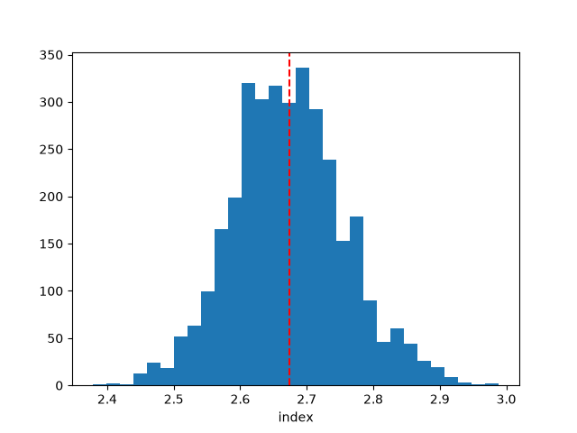

Note
Go to the end to download the full example code or to run this example in your browser via Binder.
Bayesian analysis with nested sampling#
A demonstration of a Bayesian analysis using the nested sampling technique.
Context#
1. Bayesian analysis#
Bayesian inference uses prior knowledge, in the form of a prior distribution, in order to estimate posterior probabilities which we traditionally visualise in the form of corner plots. These distributions contain more information than a maximum likelihood fit as they reveal not only the “best model” but provide a more accurate representation of errors and correlation between parameters. In particular, non-Gaussian degeneracies are complex to estimate with a maximum likelihood approach.
2. Limitations of the Markov Chain Monte Carlo approach#
A well-known approach to estimate this posterior distribution is the Markov Chain Monte Carlo (MCMC). This uses an ensemble of walkers to produce a chain of samples that after a convergence period will reach a stationary state. Once convergence is reached, the successive elements of the chain are samples of the target posterior distribution. However, the weakness of the MCMC approach lies in the “Once convergence” part. If the walkers are started far from the best likelihood region, the convergence time can be long or never reached if the walkers fall in a local minima. The choice of the initialisation point can become critical for complex models with a high number of dimensions and the ability of these walkers to escape a local minimum or to accurately describe a complex likelihood space is not guaranteed.
3. Nested sampling approach#
To overcome these issues, the nested sampling (NS) algorithm has gained traction in physics and astronomy. It is a Monte Carlo algorithm for computing an integral of the likelihood function over the prior model parameter space introduced in Skilling, 2004. The method performs this integral by evolving a collection of points through the parameter space (see recent reviews from Ashton et al., 2022, and Buchner, 2023). Without going into too many details, one important specificity of the NS method is that it starts from the entire parameter space and evolves a collection of live points to map all minima (including multiple modes if any), whereas Markov Chain Monte Carlo methods require an initialisation point and the walkers will explore the local likelihood. The ability of these walkers to escape a local minimum or to accurately describe a complex likelihood space is not guaranteed. This is a fundamental difference with MCMC or Minuit which will only ever probe the vicinity along their minimisation paths and do not have an overview of the global likelihood landscape. The analysis using the NS framework is more CPU time consuming than a standard classical fit, but it provides the full posterior distribution for all parameters, which is out of reach with traditional fitting techniques (N*(N-1)/2 contour plots to generate). In addition, it is more robust to the choice of initialisation, requires less human intervention and is therefore readily integrated in pipeline analysis. In Gammapy, we provide several NS backends: UltraNest and Nautilus. UltraNest is a package that implements the NS algorithm and is used in many astrophysical applications. Nautilus is a more recent implementation of the NS algorithm that exploits neural networks to learn a likelihood function emulator to propose new live points. It is designed to be faster and more efficient than UltraNest, especially for high-dimensional problems. For a nice visualisation of the NS method see here: sampling visualisation. And for a tutorial of UltraNest applied to X-ray fitting with concrete examples and questions see: BXA Tutorial.
See the UltraNest docs here). Note: please cite UltraNest if used for a paper If you are using the “UltraNest” library for a paper, please follow its citation scheme: Cite UltraNest.
See the Nautilus docs here). Note: please cite Nautilus if used for a paper If you are using the “Nautilus” library for a paper, please follow its citation scheme: Cite Nautilus.
Proposed approach#
In this example, we will perform a Bayesian analysis with multiple 1D spectra of the Crab nebula data and investigate their posterior distributions.
Setup#
As usual, we’ll start with some setup …
import matplotlib.pyplot as plt
import numpy as np
import astropy.units as u
from gammapy.datasets import Datasets
from gammapy.datasets import SpectrumDatasetOnOff
from gammapy.modeling.models import (
SkyModel,
UniformPrior,
LogUniformPrior,
)
from gammapy.modeling.sampler import Sampler
from gammapy.estimators import FluxCollectionEstimator
from gammapy.visualization import plot_samples_violin_vs_energy
Loading the spectral datasets#
Here we will load a few Crab 1D spectral data for which we will do a fit.
Model definition#
Now we want to define the spectral model that will be fitted to the data. The Crab spectra will be fitted here with a simple powerlaw for simplicity.
model = SkyModel.create(spectral_model="pl", name="crab")
Warning
Priors definition: Unlike a traditional fit where priors on the parameters are optional, here it is inherent to the Bayesian approach and are therefore mandatory.
In this case we will set (min,max) prior that will define the
boundaries in which the sampling will be performed.
Note that it is usually recommended to use a LogUniformPrior for
the parameters that have a large amplitude range like the
amplitude parameter.
A UniformPrior means that the samples will be drawn with uniform
probability between the (min,max) values in the linear or log space
in the case of a LogUniformPrior.
model.spectral_model.amplitude.prior = LogUniformPrior(min=1e-12, max=1e-10)
model.spectral_model.index.prior = UniformPrior(min=1, max=5)
datasets.models = [model]
print(datasets.models)
DatasetModels
Component 0: SkyModel
Name : crab
Datasets names : None
Spectral model type : PowerLawSpectralModel
Spatial model type :
Temporal model type :
Parameters:
index : 2.000 +/- 0.00
amplitude : 1.00e-12 +/- 0.0e+00 1 / (TeV s cm2)
reference (frozen): 1.000 TeV
Defining the sampler and options#
As for the Fit object, the Sampler object can receive
different backends.
The Sampler comes with “reasonable” default parameters, but you can
change them via the options dictionary, using the backend’s own option names.
Gammapy passes each option to the backend sampler constructor or to its run method.
Here is a short description of the most relevant UltraNest options that you
could change:
min_num_live_points: minimum number of live points throughout the run. More points allow to discover multiple peaks if existing, but is slower. To test the Prior boundaries and for debugging, a lower number (~100) can be used before a production run with more points (~400 or more).frac_remain: the cut-off condition for the integration, set by the maximum allowed fraction of posterior mass left in the live points vs the dead points. High values (e.g., 0.5) are faster and can be used if the posterior distribution is a relatively simple shape. A low value (1e-1, 1e-2) is optimal for finding peaks, but slower.log_dir: directory where the output files will be stored. If set to None, no files will be written. If set to a string, a directory will be created containing the ongoing status of the run and final results. For time consuming analysis, it is highly recommended to use that option to monitor the run and restart it in case of a crash (withresume=True).
More information about the UltraNest options can be found in the UltraNest docs.
More information about the Nautilus options can be found in the Nautilus docs.
A few useful options for Nautilus are:
n_live: number of live points. Equivalent ofmin_num_live_pointsin UltraNest. Due to a different methodology the recommended number of live points should be higher than in UltraNest (1000-3000) while still being faster in high-dimensional problems.f_live: fraction of the evidence from live points to use for convergence. Equivalent offrac_remainin UltraNest.pool: Pool used for parallelization of likelihood calls and sampler calculations.filepath: file path with .hdf5 extension (not directory path) where the output files will be stored.
Backend comparison: For a comparison between the two backends methods, see here. For a gamma-ray analysis, current testing shows that UltraNest can be faster (or equivalent) than Nautilus for low-dimensional problems (1-5 parameters) and Nautilus is faster for high-dimensional problems (>10 parameters) but this of course case specific. If your analysis is dominated by likelihood evaluation time, the parallelisation of the likelihood evaluation in Nautilus (using multiprocessing, just setting pool=nCPUs in the sampler options) has a simpler setup than UltraNest (MPI) and can be more efficient on laptops. Notably, multiprocessing with Nautilus can work in a Jupyter notebook while MPI with UltraNest is not supported in a notebook.
Important note: unlike the MCMC method, you don’t need to define the number of steps for which the sampler will run. The algorithm will automatically stop once a convergence criteria has been reached.
Next we can run the sampler on a given dataset. No options are accepted in the run method.
[ultranest] Sampling 400 live points from prior ...
Mono-modal Volume: ~exp(-4.07) * Expected Volume: exp(0.00) Quality: ok
index : +1.0|************************************************| +5.0
amplitude: +1.0e-12|************************************************| +1.0e-10
Z=-inf(0.00%) | Like=-4772.55..-59.48 [-4772.5529..-343.5123] | it/evals=0/401 eff=0.0000% N=400
Z=-674.5(0.00%) | Like=-651.65..-59.48 [-4772.5529..-343.5123] | it/evals=20/421 eff=95.2381% N=400
Z=-544.1(0.00%) | Like=-537.62..-59.48 [-4772.5529..-343.5123] | it/evals=38/441 eff=92.6829% N=400
Z=-541.4(0.00%) | Like=-534.95..-59.48 [-4772.5529..-343.5123] | it/evals=40/445 eff=88.8889% N=400
Z=-530.9(0.00%) | Like=-521.91..-59.48 [-4772.5529..-343.5123] | it/evals=56/465 eff=86.1538% N=400
Z=-513.5(0.00%) | Like=-507.98..-59.48 [-4772.5529..-343.5123] | it/evals=75/485 eff=88.2353% N=400
Z=-508.7(0.00%) | Like=-502.22..-59.48 [-4772.5529..-343.5123] | it/evals=80/493 eff=86.0215% N=400
Mono-modal Volume: ~exp(-4.56) * Expected Volume: exp(-0.23) Quality: ok
index : +1.0|************************************************| +5.0
amplitude: +1.0e-12|********************************************* **| +1.0e-10
Z=-504.1(0.00%) | Like=-497.90..-59.48 [-4772.5529..-343.5123] | it/evals=90/503 eff=87.3786% N=400
Z=-487.6(0.00%) | Like=-481.35..-59.48 [-4772.5529..-343.5123] | it/evals=110/523 eff=89.4309% N=400
Z=-482.3(0.00%) | Like=-474.14..-59.48 [-4772.5529..-343.5123] | it/evals=120/534 eff=89.5522% N=400
Z=-465.3(0.00%) | Like=-458.63..-59.48 [-4772.5529..-343.5123] | it/evals=138/554 eff=89.6104% N=400
Z=-454.2(0.00%) | Like=-448.38..-59.48 [-4772.5529..-343.5123] | it/evals=155/574 eff=89.0805% N=400
Z=-448.9(0.00%) | Like=-441.76..-59.48 [-4772.5529..-343.5123] | it/evals=160/580 eff=88.8889% N=400
Z=-435.6(0.00%) | Like=-428.67..-59.48 [-4772.5529..-343.5123] | it/evals=177/600 eff=88.5000% N=400
Mono-modal Volume: ~exp(-4.64) * Expected Volume: exp(-0.45) Quality: ok
index : +1.0|************************************************| +5.0
amplitude: +1.0e-12|********************************************* **| +1.0e-10
Z=-431.7(0.00%) | Like=-425.13..-59.48 [-4772.5529..-343.5123] | it/evals=180/603 eff=88.6700% N=400
Z=-415.2(0.00%) | Like=-408.19..-59.48 [-4772.5529..-343.5123] | it/evals=199/623 eff=89.2377% N=400
Z=-414.2(0.00%) | Like=-407.15..-59.48 [-4772.5529..-343.5123] | it/evals=200/624 eff=89.2857% N=400
Z=-402.2(0.00%) | Like=-396.19..-59.48 [-4772.5529..-343.5123] | it/evals=218/644 eff=89.3443% N=400
Z=-388.0(0.00%) | Like=-381.99..-58.85 [-4772.5529..-343.5123] | it/evals=236/664 eff=89.3939% N=400
Z=-386.1(0.00%) | Like=-380.67..-58.85 [-4772.5529..-343.5123] | it/evals=240/668 eff=89.5522% N=400
Z=-376.3(0.00%) | Like=-369.81..-58.85 [-4772.5529..-343.5123] | it/evals=254/688 eff=88.1944% N=400
Mono-modal Volume: ~exp(-4.64) Expected Volume: exp(-0.67) Quality: ok
index : +1.0| **********************************************| +5.0
amplitude: +1.0e-12| ***********************************************| +1.0e-10
Z=-355.3(0.00%) | Like=-349.14..-58.85 [-4772.5529..-343.5123] | it/evals=270/708 eff=87.6623% N=400
Z=-349.8(0.00%) | Like=-343.35..-58.85 [-343.3534..-180.5960] | it/evals=280/718 eff=88.0503% N=400
Z=-337.1(0.00%) | Like=-330.41..-58.85 [-343.3534..-180.5960] | it/evals=295/738 eff=87.2781% N=400
Z=-322.5(0.00%) | Like=-316.46..-58.85 [-343.3534..-180.5960] | it/evals=311/758 eff=86.8715% N=400
Z=-315.1(0.00%) | Like=-308.63..-58.85 [-343.3534..-180.5960] | it/evals=320/767 eff=87.1935% N=400
Z=-303.7(0.00%) | Like=-297.21..-58.85 [-343.3534..-180.5960] | it/evals=338/788 eff=87.1134% N=400
Z=-296.3(0.00%) | Like=-288.98..-58.85 [-343.3534..-180.5960] | it/evals=350/808 eff=85.7843% N=400
Mono-modal Volume: ~exp(-4.97) * Expected Volume: exp(-0.90) Quality: ok
index : +1.0| ********************************************| +5.0
amplitude: +1.0e-12| **********************************************| +1.0e-10
Z=-291.1(0.00%) | Like=-285.35..-58.85 [-343.3534..-180.5960] | it/evals=360/820 eff=85.7143% N=400
Z=-281.7(0.00%) | Like=-274.55..-58.85 [-343.3534..-180.5960] | it/evals=376/840 eff=85.4545% N=400
Z=-271.0(0.00%) | Like=-264.12..-58.85 [-343.3534..-180.5960] | it/evals=390/860 eff=84.7826% N=400
Z=-261.5(0.00%) | Like=-254.41..-58.85 [-343.3534..-180.5960] | it/evals=400/872 eff=84.7458% N=400
Z=-254.0(0.00%) | Like=-248.49..-58.85 [-343.3534..-180.5960] | it/evals=415/892 eff=84.3496% N=400
Z=-245.1(0.00%) | Like=-238.80..-58.85 [-343.3534..-180.5960] | it/evals=433/912 eff=84.5703% N=400
Z=-243.0(0.00%) | Like=-236.92..-58.85 [-343.3534..-180.5960] | it/evals=440/920 eff=84.6154% N=400
Mono-modal Volume: ~exp(-5.15) * Expected Volume: exp(-1.12) Quality: ok
index : +1.0| *******************************************| +5.0
amplitude: +1.0e-12| *********************************************| +1.0e-10
Z=-236.9(0.00%) | Like=-229.93..-58.85 [-343.3534..-180.5960] | it/evals=450/931 eff=84.7458% N=400
Z=-227.8(0.00%) | Like=-220.04..-58.85 [-343.3534..-180.5960] | it/evals=467/953 eff=84.4485% N=400
Z=-220.4(0.00%) | Like=-213.18..-58.85 [-343.3534..-180.5960] | it/evals=480/969 eff=84.3585% N=400
Z=-211.8(0.00%) | Like=-205.50..-58.85 [-343.3534..-180.5960] | it/evals=497/990 eff=84.2373% N=400
Z=-206.1(0.00%) | Like=-197.78..-58.85 [-343.3534..-180.5960] | it/evals=510/1010 eff=83.6066% N=400
Z=-201.1(0.00%) | Like=-194.80..-58.85 [-343.3534..-180.5960] | it/evals=520/1024 eff=83.3333% N=400
Z=-198.1(0.00%) | Like=-192.43..-58.85 [-343.3534..-180.5960] | it/evals=534/1044 eff=82.9193% N=400
Mono-modal Volume: ~exp(-5.70) * Expected Volume: exp(-1.35) Quality: ok
index : +1.0| *****************************************| +5.0
amplitude: +1.0e-12| ********************************************| +1.0e-10
Z=-196.4(0.00%) | Like=-190.25..-58.85 [-343.3534..-180.5960] | it/evals=540/1052 eff=82.8221% N=400
Z=-191.5(0.00%) | Like=-184.94..-58.85 [-343.3534..-180.5960] | it/evals=554/1072 eff=82.4405% N=400
Z=-189.9(0.00%) | Like=-184.04..-58.85 [-343.3534..-180.5960] | it/evals=560/1078 eff=82.5959% N=400
Z=-187.0(0.00%) | Like=-180.23..-58.85 [-180.2255..-122.8021] | it/evals=572/1098 eff=81.9484% N=400
Z=-183.8(0.00%) | Like=-177.99..-58.85 [-180.2255..-122.8021] | it/evals=587/1118 eff=81.7549% N=400
Z=-181.7(0.00%) | Like=-176.25..-58.85 [-180.2255..-122.8021] | it/evals=600/1133 eff=81.8554% N=400
Z=-178.1(0.00%) | Like=-171.17..-58.85 [-180.2255..-122.8021] | it/evals=618/1154 eff=81.9629% N=400
Mono-modal Volume: ~exp(-5.70) Expected Volume: exp(-1.57) Quality: ok
index : +1.0| *********************************** | +5.0
amplitude: +1.0e-12| *******************************************| +1.0e-10
Z=-175.2(0.00%) | Like=-168.87..-58.85 [-180.2255..-122.8021] | it/evals=631/1172 eff=81.7358% N=400
Z=-173.1(0.00%) | Like=-166.93..-58.85 [-180.2255..-122.8021] | it/evals=640/1184 eff=81.6327% N=400
Z=-168.4(0.00%) | Like=-161.85..-58.85 [-180.2255..-122.8021] | it/evals=655/1204 eff=81.4677% N=400
Z=-163.7(0.00%) | Like=-157.76..-58.85 [-180.2255..-122.8021] | it/evals=672/1224 eff=81.5534% N=400
Z=-161.7(0.00%) | Like=-155.56..-58.85 [-180.2255..-122.8021] | it/evals=680/1232 eff=81.7308% N=400
Z=-158.5(0.00%) | Like=-152.40..-58.85 [-180.2255..-122.8021] | it/evals=694/1253 eff=81.3599% N=400
Z=-155.5(0.00%) | Like=-149.53..-58.85 [-180.2255..-122.8021] | it/evals=708/1273 eff=81.0997% N=400
Mono-modal Volume: ~exp(-5.98) * Expected Volume: exp(-1.80) Quality: ok
index : +1.0| ****************************** | +5.0
amplitude: +1.0e-12| *************************************** * | +1.0e-10
Z=-153.4(0.00%) | Like=-147.04..-58.85 [-180.2255..-122.8021] | it/evals=720/1293 eff=80.6271% N=400
Z=-150.2(0.00%) | Like=-143.94..-58.85 [-180.2255..-122.8021] | it/evals=734/1313 eff=80.3943% N=400
Z=-147.0(0.00%) | Like=-140.63..-58.85 [-180.2255..-122.8021] | it/evals=750/1333 eff=80.3859% N=400
Z=-145.2(0.00%) | Like=-139.11..-58.85 [-180.2255..-122.8021] | it/evals=760/1347 eff=80.2534% N=400
Z=-143.3(0.00%) | Like=-137.09..-58.85 [-180.2255..-122.8021] | it/evals=771/1367 eff=79.7311% N=400
Z=-140.5(0.00%) | Like=-134.24..-58.85 [-180.2255..-122.8021] | it/evals=786/1387 eff=79.6353% N=400
Z=-138.0(0.00%) | Like=-131.53..-58.85 [-180.2255..-122.8021] | it/evals=800/1405 eff=79.6020% N=400
Mono-modal Volume: ~exp(-6.43) * Expected Volume: exp(-2.02) Quality: ok
index : +1.0| *************************** +4.0 | +5.0
amplitude: +1.0e-12| ************************************ | +1.0e-10
Z=-136.3(0.00%) | Like=-130.16..-58.85 [-180.2255..-122.8021] | it/evals=810/1419 eff=79.4897% N=400
Z=-133.9(0.00%) | Like=-127.79..-58.85 [-180.2255..-122.8021] | it/evals=826/1439 eff=79.4995% N=400
Z=-131.8(0.00%) | Like=-125.55..-58.85 [-180.2255..-122.8021] | it/evals=840/1455 eff=79.6209% N=400
Z=-129.7(0.00%) | Like=-123.54..-58.85 [-180.2255..-122.8021] | it/evals=856/1475 eff=79.6279% N=400
Z=-127.2(0.00%) | Like=-121.00..-58.85 [-122.4602..-94.8728] | it/evals=871/1496 eff=79.4708% N=400
Z=-126.3(0.00%) | Like=-120.24..-58.85 [-122.4602..-94.8728] | it/evals=880/1510 eff=79.2793% N=400
Z=-123.9(0.00%) | Like=-117.44..-58.85 [-122.4602..-94.8728] | it/evals=895/1531 eff=79.1335% N=400
Mono-modal Volume: ~exp(-6.61) * Expected Volume: exp(-2.25) Quality: ok
index : +1.0| +1.9 *********************** +3.8 | +5.0
amplitude: +1.0e-12| ********************************* | +1.0e-10
Z=-123.2(0.00%) | Like=-117.08..-58.85 [-122.4602..-94.8728] | it/evals=900/1539 eff=79.0167% N=400
Z=-121.7(0.00%) | Like=-115.71..-58.85 [-122.4602..-94.8728] | it/evals=915/1559 eff=78.9474% N=400
Z=-121.1(0.00%) | Like=-115.01..-58.85 [-122.4602..-94.8728] | it/evals=920/1567 eff=78.8346% N=400
Z=-119.6(0.00%) | Like=-113.61..-58.85 [-122.4602..-94.8728] | it/evals=933/1587 eff=78.6015% N=400
Z=-118.2(0.00%) | Like=-111.85..-58.85 [-122.4602..-94.8728] | it/evals=947/1607 eff=78.4590% N=400
Z=-116.7(0.00%) | Like=-110.36..-58.85 [-122.4602..-94.8728] | it/evals=960/1626 eff=78.3034% N=400
Z=-115.0(0.00%) | Like=-108.85..-58.85 [-122.4602..-94.8728] | it/evals=978/1646 eff=78.4912% N=400
Mono-modal Volume: ~exp(-6.82) * Expected Volume: exp(-2.47) Quality: ok
index : +1.0| +2.0 ********************** +3.7 | +5.0
amplitude: +1.0e-12| ****************************** | +1.0e-10
Z=-113.8(0.00%) | Like=-107.72..-58.85 [-122.4602..-94.8728] | it/evals=990/1661 eff=78.5091% N=400
Z=-113.0(0.00%) | Like=-106.77..-58.85 [-122.4602..-94.8728] | it/evals=1000/1674 eff=78.4929% N=400
Z=-111.6(0.00%) | Like=-105.35..-58.85 [-122.4602..-94.8728] | it/evals=1015/1694 eff=78.4389% N=400
Z=-110.1(0.00%) | Like=-103.71..-58.85 [-122.4602..-94.8728] | it/evals=1031/1714 eff=78.4627% N=400
Z=-109.2(0.00%) | Like=-103.03..-58.85 [-122.4602..-94.8728] | it/evals=1040/1725 eff=78.4906% N=400
Z=-107.5(0.00%) | Like=-101.16..-58.85 [-122.4602..-94.8728] | it/evals=1055/1746 eff=78.3804% N=400
Z=-106.4(0.00%) | Like=-99.97..-58.85 [-122.4602..-94.8728] | it/evals=1065/1766 eff=77.9649% N=400
Z=-105.3(0.00%) | Like=-98.85..-58.85 [-122.4602..-94.8728] | it/evals=1077/1786 eff=77.7056% N=400
Mono-modal Volume: ~exp(-7.00) * Expected Volume: exp(-2.70) Quality: ok
index : +1.0| +2.1 ******************* +3.6 | +5.0
amplitude: +1.0e-12| *************************** +7.6e-11 | +1.0e-10
Z=-105.0(0.00%) | Like=-98.45..-58.85 [-122.4602..-94.8728] | it/evals=1080/1790 eff=77.6978% N=400
Z=-103.8(0.00%) | Like=-97.74..-58.85 [-122.4602..-94.8728] | it/evals=1094/1810 eff=77.5887% N=400
Z=-102.5(0.00%) | Like=-96.08..-58.85 [-122.4602..-94.8728] | it/evals=1109/1830 eff=77.5524% N=400
Z=-101.4(0.00%) | Like=-94.87..-58.85 [-94.8693..-78.2251] | it/evals=1120/1845 eff=77.5087% N=400
Z=-100.2(0.00%) | Like=-94.03..-58.85 [-94.8693..-78.2251] | it/evals=1134/1865 eff=77.4061% N=400
Z=-99.3(0.00%) | Like=-92.90..-58.85 [-94.8693..-78.2251] | it/evals=1146/1885 eff=77.1717% N=400
Z=-98.0(0.00%) | Like=-91.58..-58.85 [-94.8693..-78.2251] | it/evals=1160/1905 eff=77.0764% N=400
Mono-modal Volume: ~exp(-7.02) * Expected Volume: exp(-2.92) Quality: ok
index : +1.0| +2.1 ***************** +3.5 | +5.0
amplitude: +1.0e-12| +2.4e-11 ************************ +7.1e-11 | +1.0e-10
Z=-97.2(0.00%) | Like=-90.82..-58.85 [-94.8693..-78.2251] | it/evals=1170/1920 eff=76.9737% N=400
Z=-96.2(0.00%) | Like=-90.13..-58.85 [-94.8693..-78.2251] | it/evals=1184/1942 eff=76.7834% N=400
Z=-95.5(0.00%) | Like=-89.48..-58.85 [-94.8693..-78.2251] | it/evals=1197/1962 eff=76.6325% N=400
Z=-95.3(0.00%) | Like=-89.33..-58.85 [-94.8693..-78.2251] | it/evals=1200/1965 eff=76.6773% N=400
Z=-94.3(0.00%) | Like=-87.59..-58.85 [-94.8693..-78.2251] | it/evals=1216/1985 eff=76.7192% N=400
Z=-93.1(0.00%) | Like=-86.71..-58.79 [-94.8693..-78.2251] | it/evals=1233/2005 eff=76.8224% N=400
Z=-92.7(0.00%) | Like=-86.40..-58.79 [-94.8693..-78.2251] | it/evals=1240/2015 eff=76.7802% N=400
Mono-modal Volume: ~exp(-7.47) * Expected Volume: exp(-3.15) Quality: ok
index : +1.0| +2.1 **************** +3.4 | +5.0
amplitude: +1.0e-12| +2.6e-11 ********************* +6.9e-11 | +1.0e-10
Z=-91.3(0.00%) | Like=-84.76..-58.79 [-94.8693..-78.2251] | it/evals=1260/2035 eff=77.0642% N=400
Z=-90.0(0.00%) | Like=-83.84..-58.79 [-94.8693..-78.2251] | it/evals=1279/2057 eff=77.1877% N=400
Z=-90.0(0.00%) | Like=-83.82..-58.79 [-94.8693..-78.2251] | it/evals=1280/2058 eff=77.2014% N=400
Z=-89.1(0.00%) | Like=-82.94..-58.79 [-94.8693..-78.2251] | it/evals=1297/2079 eff=77.2484% N=400
Z=-88.3(0.00%) | Like=-81.78..-58.79 [-94.8693..-78.2251] | it/evals=1312/2098 eff=77.2674% N=400
Z=-87.8(0.00%) | Like=-81.38..-58.79 [-94.8693..-78.2251] | it/evals=1320/2109 eff=77.2382% N=400
Z=-86.9(0.00%) | Like=-80.57..-58.79 [-94.8693..-78.2251] | it/evals=1336/2129 eff=77.2701% N=400
Mono-modal Volume: ~exp(-7.66) * Expected Volume: exp(-3.37) Quality: ok
index : +1.0| +2.2 ************** +3.3 | +5.0
amplitude: +1.0e-12| +2.8e-11 ******************** +6.6e-11 | +1.0e-10
Z=-86.3(0.00%) | Like=-79.90..-58.79 [-94.8693..-78.2251] | it/evals=1350/2143 eff=77.4527% N=400
Z=-85.8(0.00%) | Like=-79.39..-58.79 [-94.8693..-78.2251] | it/evals=1360/2155 eff=77.4929% N=400
Z=-84.9(0.00%) | Like=-78.45..-58.79 [-94.8693..-78.2251] | it/evals=1380/2175 eff=77.7465% N=400
Z=-84.2(0.00%) | Like=-77.75..-58.79 [-78.2111..-68.9074] | it/evals=1394/2196 eff=77.6169% N=400
Z=-83.9(0.00%) | Like=-77.45..-58.79 [-78.2111..-68.9074] | it/evals=1400/2203 eff=77.6484% N=400
Z=-83.3(0.00%) | Like=-76.95..-58.79 [-78.2111..-68.9074] | it/evals=1415/2223 eff=77.6193% N=400
Z=-82.7(0.00%) | Like=-76.27..-58.79 [-78.2111..-68.9074] | it/evals=1429/2243 eff=77.5366% N=400
Mono-modal Volume: ~exp(-7.83) * Expected Volume: exp(-3.60) Quality: ok
index : +1.0| +2.2 ************* +3.2 | +5.0
amplitude: +1.0e-12| +2.9e-11 ****************** +6.4e-11 | +1.0e-10
Z=-82.3(0.00%) | Like=-75.90..-58.79 [-78.2111..-68.9074] | it/evals=1440/2262 eff=77.3362% N=400
Z=-81.7(0.00%) | Like=-75.46..-58.79 [-78.2111..-68.9074] | it/evals=1455/2282 eff=77.3114% N=400
Z=-81.2(0.00%) | Like=-74.72..-58.79 [-78.2111..-68.9074] | it/evals=1469/2301 eff=77.2751% N=400
Z=-80.8(0.00%) | Like=-74.21..-58.79 [-78.2111..-68.9074] | it/evals=1480/2314 eff=77.3250% N=400
Z=-80.1(0.00%) | Like=-73.61..-58.79 [-78.2111..-68.9074] | it/evals=1495/2335 eff=77.2610% N=400
Z=-79.6(0.00%) | Like=-73.14..-58.79 [-78.2111..-68.9074] | it/evals=1509/2356 eff=77.1472% N=400
Z=-79.2(0.00%) | Like=-72.81..-58.79 [-78.2111..-68.9074] | it/evals=1520/2376 eff=76.9231% N=400
Mono-modal Volume: ~exp(-8.34) * Expected Volume: exp(-3.82) Quality: ok
index : +1.0| +2.3 *********** +3.2 | +5.0
amplitude: +1.0e-12| +3.0e-11 **************** +6.2e-11 | +1.0e-10
Z=-78.9(0.00%) | Like=-72.44..-58.79 [-78.2111..-68.9074] | it/evals=1530/2391 eff=76.8458% N=400
Z=-78.4(0.00%) | Like=-72.14..-58.79 [-78.2111..-68.9074] | it/evals=1546/2411 eff=76.8772% N=400
Z=-78.1(0.00%) | Like=-71.79..-58.79 [-78.2111..-68.9074] | it/evals=1558/2431 eff=76.7110% N=400
Z=-78.0(0.00%) | Like=-71.69..-58.79 [-78.2111..-68.9074] | it/evals=1560/2433 eff=76.7339% N=400
Z=-77.6(0.00%) | Like=-71.14..-58.79 [-78.2111..-68.9074] | it/evals=1574/2453 eff=76.6683% N=400
Z=-77.2(0.00%) | Like=-70.72..-58.79 [-78.2111..-68.9074] | it/evals=1589/2473 eff=76.6522% N=400
Z=-76.8(0.00%) | Like=-70.41..-58.79 [-78.2111..-68.9074] | it/evals=1600/2487 eff=76.6651% N=400
Z=-76.4(0.00%) | Like=-69.96..-58.79 [-78.2111..-68.9074] | it/evals=1616/2506 eff=76.7331% N=400
Mono-modal Volume: ~exp(-8.34) Expected Volume: exp(-4.05) Quality: ok
index : +1.0| +2.3 *********** +3.1 | +5.0
amplitude: +1.0e-12| +3.2e-11 *************** +6.0e-11 | +1.0e-10
Z=-76.1(0.00%) | Like=-69.73..-58.79 [-78.2111..-68.9074] | it/evals=1629/2524 eff=76.6949% N=400
Z=-75.8(0.00%) | Like=-69.40..-58.79 [-78.2111..-68.9074] | it/evals=1639/2544 eff=76.4459% N=400
Z=-75.8(0.00%) | Like=-69.38..-58.79 [-78.2111..-68.9074] | it/evals=1640/2545 eff=76.4569% N=400
Z=-75.4(0.00%) | Like=-68.94..-58.79 [-78.2111..-68.9074] | it/evals=1655/2565 eff=76.4434% N=400
Z=-75.1(0.01%) | Like=-68.84..-58.79 [-68.8979..-65.9537] | it/evals=1667/2585 eff=76.2929% N=400
Z=-74.9(0.01%) | Like=-68.63..-58.79 [-68.8979..-65.9537] | it/evals=1680/2600 eff=76.3636% N=400
Z=-74.6(0.01%) | Like=-68.28..-58.79 [-68.8979..-65.9537] | it/evals=1694/2620 eff=76.3063% N=400
Z=-74.3(0.01%) | Like=-68.00..-58.79 [-68.8979..-65.9537] | it/evals=1709/2639 eff=76.3287% N=400
Mono-modal Volume: ~exp(-8.34) Expected Volume: exp(-4.27) Quality: ok
index : +1.0| +2.3 ********* +3.1 | +5.0
amplitude: +1.0e-12| +3.3e-11 ************* +5.8e-11 | +1.0e-10
Z=-74.1(0.01%) | Like=-67.87..-58.79 [-68.8979..-65.9537] | it/evals=1720/2657 eff=76.2074% N=400
Z=-73.8(0.02%) | Like=-67.53..-58.79 [-68.8979..-65.9537] | it/evals=1738/2679 eff=76.2615% N=400
Z=-73.5(0.03%) | Like=-67.07..-58.79 [-68.8979..-65.9537] | it/evals=1755/2700 eff=76.3043% N=400
Z=-73.4(0.03%) | Like=-67.03..-58.79 [-68.8979..-65.9537] | it/evals=1760/2705 eff=76.3557% N=400
Z=-73.2(0.03%) | Like=-66.83..-58.79 [-68.8979..-65.9537] | it/evals=1772/2725 eff=76.2151% N=400
Z=-73.0(0.04%) | Like=-66.62..-58.79 [-68.8979..-65.9537] | it/evals=1786/2745 eff=76.1620% N=400
Z=-72.8(0.05%) | Like=-66.45..-58.79 [-68.8979..-65.9537] | it/evals=1799/2766 eff=76.0355% N=400
Mono-modal Volume: ~exp(-8.72) * Expected Volume: exp(-4.50) Quality: ok
index : +1.0| +2.4 ********* +3.0 | +5.0
amplitude: +1.0e-12| +3.4e-11 ************* +5.7e-11 | +1.0e-10
Z=-72.7(0.05%) | Like=-66.41..-58.79 [-68.8979..-65.9537] | it/evals=1800/2767 eff=76.0456% N=400
Z=-72.5(0.07%) | Like=-66.01..-58.79 [-68.8979..-65.9537] | it/evals=1815/2787 eff=76.0369% N=400
Z=-72.2(0.10%) | Like=-65.74..-58.79 [-65.9430..-65.4900] | it/evals=1833/2806 eff=76.1845% N=400
Z=-72.1(0.11%) | Like=-65.60..-58.79 [-65.9430..-65.4900] | it/evals=1840/2814 eff=76.2220% N=400
Z=-71.9(0.14%) | Like=-65.42..-58.79 [-65.4241..-65.4161]*| it/evals=1855/2834 eff=76.2120% N=400
Z=-71.7(0.16%) | Like=-65.22..-58.79 [-65.2157..-65.2079]*| it/evals=1867/2854 eff=76.0799% N=400
Z=-71.5(0.20%) | Like=-64.93..-58.79 [-64.9422..-64.9297] | it/evals=1879/2874 eff=75.9499% N=400
Z=-71.5(0.21%) | Like=-64.91..-58.79 [-64.9101..-64.8971] | it/evals=1880/2877 eff=75.8983% N=400
Mono-modal Volume: ~exp(-9.14) * Expected Volume: exp(-4.73) Quality: ok
index : +1.0| +2.4 ******** +3.0 | +5.0
amplitude: +1.0e-12| +3.5e-11 *********** +5.6e-11 | +1.0e-10
Z=-71.3(0.24%) | Like=-64.82..-58.79 [-64.8181..-64.7826] | it/evals=1890/2890 eff=75.9036% N=400
Z=-71.1(0.29%) | Like=-64.64..-58.78 [-64.6500..-64.6383] | it/evals=1905/2910 eff=75.8964% N=400
Z=-70.9(0.35%) | Like=-64.51..-58.78 [-64.5108..-64.4975] | it/evals=1920/2927 eff=75.9794% N=400
Z=-70.8(0.40%) | Like=-64.39..-58.76 [-64.3939..-64.3883]*| it/evals=1932/2947 eff=75.8539% N=400
Z=-70.6(0.48%) | Like=-64.15..-58.76 [-64.1734..-64.1521] | it/evals=1950/2967 eff=75.9642% N=400
Z=-70.4(0.55%) | Like=-63.94..-58.76 [-63.9410..-63.9385]*| it/evals=1960/2981 eff=75.9396% N=400
Z=-70.3(0.63%) | Like=-63.86..-58.76 [-63.8570..-63.8542]*| it/evals=1971/2999 eff=75.8369% N=400
Mono-modal Volume: ~exp(-9.14) Expected Volume: exp(-4.95) Quality: ok
index : +1.0| +2.4 ******* +2.9 | +5.0
amplitude: +1.0e-12| +3.5e-11 ********** +5.4e-11 | +1.0e-10
Z=-70.2(0.69%) | Like=-63.73..-58.76 [-63.7634..-63.7333] | it/evals=1980/3015 eff=75.7170% N=400
Z=-70.0(0.84%) | Like=-63.55..-58.76 [-63.5481..-63.5193] | it/evals=1996/3034 eff=75.7783% N=400
Z=-70.0(0.88%) | Like=-63.44..-58.76 [-63.4427..-63.4387]*| it/evals=2000/3041 eff=75.7289% N=400
Z=-69.8(1.05%) | Like=-63.24..-58.76 [-63.2404..-63.2293] | it/evals=2014/3060 eff=75.7143% N=400
Z=-69.6(1.26%) | Like=-63.00..-58.76 [-63.0023..-63.0009]*| it/evals=2030/3080 eff=75.7463% N=400
Z=-69.5(1.41%) | Like=-62.93..-58.76 [-62.9297..-62.9267]*| it/evals=2040/3091 eff=75.8082% N=400
Z=-69.4(1.64%) | Like=-62.73..-58.76 [-62.7338..-62.7263]*| it/evals=2054/3110 eff=75.7934% N=400
Z=-69.2(1.90%) | Like=-62.57..-58.76 [-62.5939..-62.5733] | it/evals=2068/3129 eff=75.7787% N=400
Mono-modal Volume: ~exp(-9.59) * Expected Volume: exp(-5.18) Quality: ok
index : +1.0| +2.4 ****** +2.9 | +5.0
amplitude: +1.0e-12| +3.7e-11 ********* +5.3e-11 | +1.0e-10
Z=-69.2(1.94%) | Like=-62.51..-58.76 [-62.5589..-62.5093] | it/evals=2070/3131 eff=75.7964% N=400
Z=-69.1(2.15%) | Like=-62.44..-58.76 [-62.4409..-62.4385]*| it/evals=2080/3144 eff=75.8017% N=400
Z=-68.9(2.54%) | Like=-62.30..-58.76 [-62.3198..-62.3040] | it/evals=2096/3162 eff=75.8870% N=400
Z=-68.8(2.87%) | Like=-62.18..-58.76 [-62.1846..-62.1841]*| it/evals=2109/3180 eff=75.8633% N=400
Z=-68.7(3.14%) | Like=-62.10..-58.75 [-62.1152..-62.1016] | it/evals=2120/3192 eff=75.9312% N=400
Z=-68.6(3.54%) | Like=-62.00..-58.75 [-61.9994..-61.9983]*| it/evals=2135/3213 eff=75.8976% N=400
Z=-68.4(4.12%) | Like=-61.88..-58.75 [-61.8822..-61.8805]*| it/evals=2153/3232 eff=76.0240% N=400
Mono-modal Volume: ~exp(-9.59) Expected Volume: exp(-5.40) Quality: ok
index : +1.0| +2.5 ****** +2.9 | +5.0
amplitude: +1.0e-12| +3.7e-11 ******** +5.2e-11 | +1.0e-10
Z=-68.4(4.38%) | Like=-61.79..-58.75 [-61.7936..-61.7893]*| it/evals=2160/3241 eff=76.0296% N=400
Z=-68.2(4.94%) | Like=-61.71..-58.75 [-61.7063..-61.7036]*| it/evals=2176/3261 eff=76.0573% N=400
Z=-68.1(5.56%) | Like=-61.63..-58.75 [-61.6253..-61.6233]*| it/evals=2191/3281 eff=76.0500% N=400
Z=-68.1(5.95%) | Like=-61.55..-58.75 [-61.5471..-61.5410]*| it/evals=2200/3292 eff=76.0719% N=400
Z=-68.0(6.45%) | Like=-61.46..-58.75 [-61.4743..-61.4584] | it/evals=2211/3312 eff=75.9272% N=400
Z=-67.9(7.14%) | Like=-61.34..-58.75 [-61.3389..-61.3158] | it/evals=2226/3332 eff=75.9209% N=400
Z=-67.8(7.85%) | Like=-61.18..-58.75 [-61.1817..-61.1793]*| it/evals=2240/3350 eff=75.9322% N=400
Mono-modal Volume: ~exp(-10.04) * Expected Volume: exp(-5.63) Quality: ok
index : +1.0| +2.5 ****** +2.9 | +5.0
amplitude: +1.0e-12| +3.8e-11 ******** +5.1e-11 | +1.0e-10
Z=-67.7(8.39%) | Like=-61.12..-58.75 [-61.1176..-61.1063] | it/evals=2250/3364 eff=75.9109% N=400
Z=-67.6(9.42%) | Like=-60.99..-58.75 [-60.9931..-60.9856]*| it/evals=2267/3384 eff=75.9718% N=400
Z=-67.5(10.20%) | Like=-60.91..-58.75 [-60.9119..-60.9085]*| it/evals=2280/3400 eff=76.0000% N=400
Z=-67.4(11.10%) | Like=-60.85..-58.75 [-60.8528..-60.8527]*| it/evals=2294/3420 eff=75.9603% N=400
Z=-67.4(11.90%) | Like=-60.81..-58.75 [-60.8135..-60.8103]*| it/evals=2306/3440 eff=75.8553% N=400
Z=-67.3(12.90%) | Like=-60.74..-58.75 [-60.7399..-60.7266] | it/evals=2320/3457 eff=75.8914% N=400
Z=-67.2(14.03%) | Like=-60.66..-58.75 [-60.6643..-60.6582]*| it/evals=2336/3477 eff=75.9181% N=400
Mono-modal Volume: ~exp(-10.20) * Expected Volume: exp(-5.85) Quality: ok
index : +1.0| +2.5 **** +2.8 | +5.0
amplitude: +1.0e-12| +3.9e-11 ****** +5.0e-11 | +1.0e-10
Z=-67.2(14.28%) | Like=-60.64..-58.75 [-60.6531..-60.6382] | it/evals=2340/3483 eff=75.9001% N=400
Z=-67.1(15.46%) | Like=-60.58..-58.75 [-60.5790..-60.5772]*| it/evals=2357/3503 eff=75.9587% N=400
Z=-67.1(15.72%) | Like=-60.57..-58.75 [-60.5743..-60.5735]*| it/evals=2360/3506 eff=75.9820% N=400
Z=-67.0(16.84%) | Like=-60.53..-58.75 [-60.5288..-60.5229]*| it/evals=2374/3526 eff=75.9437% N=400
Z=-67.0(17.92%) | Like=-60.45..-58.75 [-60.4461..-60.4417]*| it/evals=2389/3546 eff=75.9377% N=400
Z=-66.9(18.71%) | Like=-60.40..-58.75 [-60.4013..-60.3876] | it/evals=2400/3564 eff=75.8534% N=400
Z=-66.9(20.16%) | Like=-60.35..-58.75 [-60.3471..-60.3395]*| it/evals=2417/3584 eff=75.9108% N=400
Mono-modal Volume: ~exp(-10.20) Expected Volume: exp(-6.08) Quality: ok
index : +1.0| +2.5 **** +2.8 | +5.0
amplitude: +1.0e-12| +3.9e-11 ****** +5.0e-11 | +1.0e-10
Z=-66.8(21.40%) | Like=-60.30..-58.75 [-60.3013..-60.2951]*| it/evals=2432/3602 eff=75.9525% N=400
Z=-66.8(22.07%) | Like=-60.26..-58.75 [-60.2624..-60.2585]*| it/evals=2440/3614 eff=75.9179% N=400
Z=-66.7(23.31%) | Like=-60.19..-58.75 [-60.1914..-60.1902]*| it/evals=2454/3636 eff=75.8344% N=400
Z=-66.7(24.68%) | Like=-60.13..-58.75 [-60.1329..-60.1308]*| it/evals=2470/3657 eff=75.8367% N=400
Z=-66.6(25.48%) | Like=-60.10..-58.75 [-60.1019..-60.1018]*| it/evals=2480/3671 eff=75.8178% N=400
Z=-66.6(26.60%) | Like=-60.05..-58.75 [-60.0512..-60.0483]*| it/evals=2494/3691 eff=75.7824% N=400
Z=-66.5(28.30%) | Like=-60.00..-58.75 [-59.9989..-59.9916]*| it/evals=2511/3712 eff=75.8152% N=400
Mono-modal Volume: ~exp(-10.51) * Expected Volume: exp(-6.30) Quality: ok
index : +1.0| +2.5 **** +2.8 | +5.0
amplitude: +1.0e-12| +4.0e-11 ****** +4.9e-11 | +1.0e-10
Z=-66.5(29.14%) | Like=-59.96..-58.75 [-59.9645..-59.9633]*| it/evals=2520/3725 eff=75.7895% N=400
Z=-66.4(30.47%) | Like=-59.91..-58.75 [-59.9102..-59.9098]*| it/evals=2535/3744 eff=75.8074% N=400
Z=-66.4(31.97%) | Like=-59.88..-58.75 [-59.8793..-59.8763]*| it/evals=2551/3764 eff=75.8323% N=400
Z=-66.4(32.84%) | Like=-59.84..-58.75 [-59.8367..-59.8366]*| it/evals=2560/3776 eff=75.8294% N=400
Z=-66.3(33.94%) | Like=-59.81..-58.75 [-59.8130..-59.8129]*| it/evals=2573/3796 eff=75.7656% N=400
Z=-66.3(35.22%) | Like=-59.77..-58.75 [-59.7727..-59.7706]*| it/evals=2587/3819 eff=75.6654% N=400
Z=-66.3(36.52%) | Like=-59.74..-58.75 [-59.7439..-59.7435]*| it/evals=2600/3837 eff=75.6474% N=400
Mono-modal Volume: ~exp(-10.81) * Expected Volume: exp(-6.53) Quality: ok
index : +1.0| +2.6 **** +2.8 | +5.0
amplitude: +1.0e-12| +4.0e-11 ***** +4.9e-11 | +1.0e-10
Z=-66.2(37.38%) | Like=-59.72..-58.75 [-59.7181..-59.7145]*| it/evals=2610/3851 eff=75.6303% N=400
Z=-66.2(39.09%) | Like=-59.68..-58.75 [-59.6849..-59.6801]*| it/evals=2628/3871 eff=75.7131% N=400
Z=-66.2(40.20%) | Like=-59.64..-58.75 [-59.6437..-59.6435]*| it/evals=2640/3892 eff=75.6014% N=400
Z=-66.1(41.55%) | Like=-59.62..-58.75 [-59.6182..-59.6166]*| it/evals=2655/3912 eff=75.5979% N=400
Z=-66.1(42.87%) | Like=-59.60..-58.75 [-59.5952..-59.5939]*| it/evals=2670/3933 eff=75.5732% N=400
Z=-66.1(43.75%) | Like=-59.57..-58.75 [-59.5718..-59.5712]*| it/evals=2680/3947 eff=75.5568% N=400
Z=-66.0(45.17%) | Like=-59.54..-58.75 [-59.5396..-59.5395]*| it/evals=2696/3969 eff=75.5394% N=400
Mono-modal Volume: ~exp(-11.11) * Expected Volume: exp(-6.75) Quality: ok
index : +1.0| +2.6 **** +2.8 | +5.0
amplitude: +1.0e-12| +4.1e-11 **** +4.8e-11 | +1.0e-10
Z=-66.0(45.55%) | Like=-59.53..-58.75 [-59.5293..-59.5279]*| it/evals=2700/3974 eff=75.5456% N=400
Z=-66.0(46.94%) | Like=-59.51..-58.75 [-59.5107..-59.5063]*| it/evals=2715/3994 eff=75.5426% N=400
Z=-66.0(47.40%) | Like=-59.50..-58.75 [-59.4972..-59.4962]*| it/evals=2720/3999 eff=75.5765% N=400
Z=-66.0(48.73%) | Like=-59.48..-58.75 [-59.4765..-59.4734]*| it/evals=2735/4019 eff=75.5734% N=400
Z=-65.9(50.04%) | Like=-59.45..-58.75 [-59.4534..-59.4517]*| it/evals=2750/4039 eff=75.5702% N=400
Z=-65.9(50.84%) | Like=-59.43..-58.75 [-59.4333..-59.4329]*| it/evals=2760/4052 eff=75.5750% N=400
Z=-65.9(52.14%) | Like=-59.40..-58.75 [-59.3992..-59.3969]*| it/evals=2775/4072 eff=75.5719% N=400
Z=-65.9(53.12%) | Like=-59.38..-58.75 [-59.3756..-59.3745]*| it/evals=2787/4092 eff=75.4875% N=400
Mono-modal Volume: ~exp(-11.11) Expected Volume: exp(-6.98) Quality: ok
index : +1.0| +2.6 **** +2.8 | +5.0
amplitude: +1.0e-12| +4.1e-11 **** +4.8e-11 | +1.0e-10
Z=-65.9(54.22%) | Like=-59.35..-58.75 [-59.3503..-59.3475]*| it/evals=2800/4108 eff=75.5124% N=400
Z=-65.9(55.02%) | Like=-59.34..-58.75 [-59.3373..-59.3351]*| it/evals=2810/4128 eff=75.3755% N=400
Z=-65.8(56.38%) | Like=-59.31..-58.75 [-59.3107..-59.3107]*| it/evals=2827/4148 eff=75.4269% N=400
Z=-65.8(57.46%) | Like=-59.30..-58.75 [-59.2967..-59.2965]*| it/evals=2840/4166 eff=75.4116% N=400
Z=-65.8(58.39%) | Like=-59.28..-58.75 [-59.2803..-59.2794]*| it/evals=2852/4186 eff=75.3302% N=400
Z=-65.8(59.42%) | Like=-59.26..-58.75 [-59.2642..-59.2633]*| it/evals=2865/4206 eff=75.2759% N=400
Z=-65.8(60.08%) | Like=-59.25..-58.75 [-59.2539..-59.2522]*| it/evals=2874/4226 eff=75.1176% N=400
Mono-modal Volume: ~exp(-11.37) * Expected Volume: exp(-7.20) Quality: ok
index : +1.0| +2.6 *** +2.8 | +5.0
amplitude: +1.0e-12| +4.1e-11 **** +4.7e-11 | +1.0e-10
Z=-65.8(60.54%) | Like=-59.25..-58.75 [-59.2491..-59.2482]*| it/evals=2880/4233 eff=75.1370% N=400
Z=-65.7(61.56%) | Like=-59.24..-58.75 [-59.2368..-59.2364]*| it/evals=2894/4254 eff=75.0908% N=400
Z=-65.7(62.40%) | Like=-59.23..-58.75 [-59.2270..-59.2265]*| it/evals=2906/4275 eff=74.9935% N=400
Z=-65.7(63.24%) | Like=-59.21..-58.75 [-59.2104..-59.2099]*| it/evals=2917/4295 eff=74.8909% N=400
Z=-65.7(63.46%) | Like=-59.21..-58.75 [-59.2071..-59.2054]*| it/evals=2920/4299 eff=74.8910% N=400
Z=-65.7(64.61%) | Like=-59.19..-58.75 [-59.1930..-59.1888]*| it/evals=2936/4320 eff=74.8980% N=400
Z=-65.7(65.76%) | Like=-59.17..-58.75 [-59.1742..-59.1735]*| it/evals=2953/4340 eff=74.9492% N=400
Z=-65.7(66.21%) | Like=-59.17..-58.75 [-59.1680..-59.1678]*| it/evals=2960/4349 eff=74.9557% N=400
Mono-modal Volume: ~exp(-11.55) * Expected Volume: exp(-7.43) Quality: ok
index : +1.0| +2.6 ** +2.7 | +5.0
amplitude: +1.0e-12| +4.2e-11 **** +4.7e-11 | +1.0e-10
Z=-65.7(66.89%) | Like=-59.16..-58.75 [-59.1601..-59.1594]*| it/evals=2970/4363 eff=74.9432% N=400
Z=-65.6(67.87%) | Like=-59.14..-58.75 [-59.1352..-59.1345]*| it/evals=2985/4384 eff=74.9247% N=400
Z=-65.6(68.80%) | Like=-59.12..-58.75 [-59.1229..-59.1227]*| it/evals=3000/4403 eff=74.9438% N=400
Z=-65.6(69.91%) | Like=-59.10..-58.75 [-59.1013..-59.0997]*| it/evals=3017/4423 eff=74.9938% N=400
[ultranest] Explored until L=-6e+01
[ultranest] Likelihood function evaluations: 4424
[ultranest] logZ = -65.24 +- 0.07766
[ultranest] Effective samples strategy satisfied (ESS = 1324.5, need >400)
[ultranest] Posterior uncertainty strategy is satisfied (KL: 0.46+-0.06 nat, need <0.50 nat)
[ultranest] Evidency uncertainty strategy is satisfied (dlogz=0.27, need <0.5)
[ultranest] logZ error budget: single: 0.12 bs:0.08 tail:0.26 total:0.27 required:<0.50
[ultranest] done iterating.
logZ = -65.254 +- 0.326
single instance: logZ = -65.254 +- 0.118
bootstrapped : logZ = -65.239 +- 0.194
tail : logZ = +- 0.262
insert order U test : converged: True correlation: inf iterations
index : 2.342 │ ▁ ▁▁▁▁▁▁▁▂▃▄▅▄▆▇▇▇▆▆▆▅▄▄▃▂▁▁▁▁▁▁▁▁▁▁ │3.007 2.675 +- 0.084
amplitude : 0.0000000000334│ ▁ ▁▁▁▁▁▂▂▃▃▄▅▆▇▇▇▇▆▅▄▃▃▂▂▁▁▁▁▁▁▁ ▁ │0.0000000000590 0.0000000000446 +- 0.0000000000030
Understanding the outputs#
In the Jupyter notebook, you should be able to see an interactive visualisation of how the parameter space shrinks which starts from the (min,max) shrinks down towards the optimal parameters.
The output above is filled with interesting information. Here we provide a short description of the most relevant information provided above. For more detailed information see the UltraNest docs.
During the sampling
Z=-68.8(0.53%) | Like=-63.96..-58.75 [-63.9570..-63.9539]*| it/evals=640/1068 eff=73.7327% N=300
Some important information here is:
Progress (0.53%): the completed fraction of the integral. This is not a time progress bar. Stays at zero for a good fraction of the run.
Efficiency (eff value) of the sampling: this indicates out of the proposed new points, how many were accepted. If your efficiency is too small (<<1%), maybe you should revise your priors (e.g use a LogUniform prior for the normalisation).
Final outputs
The final lines indicate that all three “convergence” strategies are satisfied (samples, posterior uncertainty, and evidence uncertainty).
logZ = -65.104 +- 0.292
The main goal of the Nested sampling algorithm is to estimate Z (the Bayesian evidence) which is given above together with an uncertainty. In a similar way to deltaLogLike and deltaAIC, deltaLogZ values can be used for model comparison. For more information see : on the use of the evidence for model comparison. An interesting comparison of the efficiency and false discovery rate of model selection with deltaLogLike and deltaLogZ is given in Appendix C of Buchner et al., 2014.
Results stored on disk
if log_dir is set to a name where the results will be stored, then
a directory is created containing many useful results and plots.
A description of these outputs is given in the Ultranest
docs.
Results#
Within a Bayesian analysis, the concept of best-fit has to be viewed differently from what is done in a gradient descent fit.
The output of the Bayesian analysis is the posterior distribution and there is no “best-fit” output. One has to define, based on the posteriors, what we want to consider as “best-fit” and several options are possible:
the mean of the distribution
the median
the lowest likelihood value
By default the DatasetModels will be updated with the mean of
the posterior distributions.
print(result_joint.models)
DatasetModels
Component 0: SkyModel
Name : crab
Datasets names : None
Spectral model type : PowerLawSpectralModel
Spatial model type :
Temporal model type :
Parameters:
index : 2.675 +/- 0.08
amplitude : 4.46e-11 +/- 3.0e-12 1 / (TeV s cm2)
reference (frozen): 1.000 TeV
The Sampler class returns a very rich dictionary.
The most “standard” information about the posterior distributions can
be found in :
print(result_joint.sampler_results["posterior"])
{'mean': [2.675287130075307, 4.456330695160584e-11], 'stdev': [0.08368824746146136, 2.9929924634515452e-12], 'median': [2.672617971289573, 4.4544423393992016e-11], 'errlo': [2.5905796616940298, 4.1494163135342454e-11], 'errup': [2.7599668035224005, 4.753860531591747e-11], 'information_gain_bits': [2.681429072137659, 3.149809129113502]}
Besides mean, errors, etc, an interesting value is the
information gain which estimates how much the posterior
distribution has shrunk with respect to the prior (i.e. how much
we’ve learned). A value < 1 means that the parameter is poorly
constrained within the prior range (we haven’t learned much with respect to our prior assumption).
For a physical interpretation of the information gain see this
example.
The SamplerResult dictionary contains also other interesting
information :
print(result_joint.sampler_results.keys())
dict_keys(['niter', 'logz', 'logzerr', 'logz_bs', 'logz_single', 'logzerr_tail', 'logzerr_bs', 'ess', 'H', 'Herr', 'posterior', 'weighted_samples', 'samples', 'maximum_likelihood', 'ncall', 'paramnames', 'logzerr_single', 'insertion_order_MWW_test'])
Of particular interest, the samples used in the process to approximate the posterior distribution can be accessed via :
for i, n in enumerate(model.parameters.free_parameters.names):
s = result_joint.samples[:, i]
fig, ax = plt.subplots()
ax.hist(s, bins=30)
ax.axvline(np.mean(s), ls="--", color="red")
ax.set_xlabel(n)
plt.show()


While the above plots are interesting, the real strength of the Bayesian analysis is to visualise all parameters correlations which is usually done using “corner plots”. Ultranest corner plot function is a wrapper around the corner package. See the above link for optional keywords. Other packages exist for corner plots, like chainconsumer which is discussed later in this tutorial.
from ultranest.plot import cornerplot
cornerplot(
result_joint.sampler_results,
plot_datapoints=True,
plot_density=True,
bins=20,
title_fmt=".2e",
smooth=False,
)
plt.show()

Spectral model error band from samples#
To compute the spectral error band (“butterfly plots”), we will directly use the samples of the posterior distribution. This is more robust as compared to the traditional method of using the covariance matrix of the parameters which implicitly assumes Gaussian errors while for the posterior distribution there is no shape assumed. This difference can become significant when the parameter errors are non-Gaussian. For this we will need to convert the list of samples back to the spectral model parameters with the relevant units (e.g. normalisation units).
def get_samples_from_posterior(spectral_model, results):
"""
Create a list of spectral parameters with correct units
from the unitless parameters returned by the sampler.
"""
n_samples = results.samples.shape[0]
samples = []
for p in spectral_model.parameters:
try:
idx = spectral_model.parameters.free_unique_parameters.index(p)
samples.append(results.samples[:, idx] * p.unit)
except ValueError:
samples.append(np.ones(n_samples) * p.quantity)
return samples
samples = get_samples_from_posterior(datasets.models[0].spectral_model, result_joint)
Next we can provide these samples to the plot_error
method.

Individual run analysis#
Now we’ll analyse several Crab runs individually so that we can compare them.
result_0 = sampler.run(datasets[0])
result_1 = sampler.run(datasets[1])
result_2 = sampler.run(datasets[2])
[ultranest] Sampling 400 live points from prior ...
Mono-modal Volume: ~exp(-4.48) * Expected Volume: exp(0.00) Quality: ok
index : +1.0|************************************************| +5.0
amplitude: +1.0e-12|**************************************** ** ***| +1.0e-10
Z=-inf(0.00%) | Like=-1951.07..-20.71 [-1951.0685..-103.1330] | it/evals=0/401 eff=0.0000% N=400
Z=-181.2(0.00%) | Like=-174.87..-20.71 [-1951.0685..-103.1330] | it/evals=33/434 eff=97.0588% N=400
Z=-176.9(0.00%) | Like=-171.40..-20.71 [-1951.0685..-103.1330] | it/evals=40/443 eff=93.0233% N=400
Z=-162.4(0.00%) | Like=-157.28..-20.71 [-1951.0685..-103.1330] | it/evals=73/478 eff=93.5897% N=400
Z=-160.6(0.00%) | Like=-156.02..-20.71 [-1951.0685..-103.1330] | it/evals=80/485 eff=94.1176% N=400
Mono-modal Volume: ~exp(-4.53) * Expected Volume: exp(-0.23) Quality: ok
index : +1.0|************************************************| +5.0
amplitude: +1.0e-12|**************************************** ** ***| +1.0e-10
Z=-159.0(0.00%) | Like=-154.37..-20.71 [-1951.0685..-103.1330] | it/evals=90/496 eff=93.7500% N=400
Z=-151.7(0.00%) | Like=-146.78..-20.71 [-1951.0685..-103.1330] | it/evals=120/528 eff=93.7500% N=400
Z=-144.8(0.00%) | Like=-139.57..-20.47 [-1951.0685..-103.1330] | it/evals=151/563 eff=92.6380% N=400
Z=-142.0(0.00%) | Like=-137.23..-20.47 [-1951.0685..-103.1330] | it/evals=160/573 eff=92.4855% N=400
Mono-modal Volume: ~exp(-4.73) * Expected Volume: exp(-0.45) Quality: ok
index : +1.0| ***********************************************| +5.0
amplitude: +1.0e-12|**************************************** ** ***| +1.0e-10
Z=-137.2(0.00%) | Like=-132.40..-20.47 [-1951.0685..-103.1330] | it/evals=180/597 eff=91.3706% N=400
Z=-131.3(0.00%) | Like=-125.92..-20.47 [-1951.0685..-103.1330] | it/evals=200/618 eff=91.7431% N=400
Z=-123.7(0.00%) | Like=-118.83..-20.47 [-1951.0685..-103.1330] | it/evals=231/654 eff=90.9449% N=400
Z=-122.3(0.00%) | Like=-117.63..-20.47 [-1951.0685..-103.1330] | it/evals=240/663 eff=91.2548% N=400
Z=-117.2(0.00%) | Like=-112.38..-20.47 [-1951.0685..-103.1330] | it/evals=268/699 eff=89.6321% N=400
Mono-modal Volume: ~exp(-4.73) Expected Volume: exp(-0.67) Quality: ok
index : +1.0| **********************************************| +5.0
amplitude: +1.0e-12| *************************************** ** ***| +1.0e-10
Z=-114.5(0.00%) | Like=-109.44..-20.47 [-1951.0685..-103.1330] | it/evals=280/714 eff=89.1720% N=400
Z=-107.7(0.00%) | Like=-102.96..-20.47 [-103.1055..-66.8264] | it/evals=308/750 eff=88.0000% N=400
Z=-105.8(0.00%) | Like=-100.10..-20.47 [-103.1055..-66.8264] | it/evals=320/769 eff=86.7209% N=400
Z=-100.5(0.00%) | Like=-95.13..-20.47 [-103.1055..-66.8264] | it/evals=345/805 eff=85.1852% N=400
Mono-modal Volume: ~exp(-5.34) * Expected Volume: exp(-0.90) Quality: ok
index : +1.0| *******************************************| +5.0
amplitude: +1.0e-12| ************************************** *** * | +1.0e-10
Z=-97.4(0.00%) | Like=-92.09..-20.47 [-103.1055..-66.8264] | it/evals=360/821 eff=85.5107% N=400
Z=-92.4(0.00%) | Like=-87.41..-20.47 [-103.1055..-66.8264] | it/evals=389/856 eff=85.3070% N=400
Z=-90.7(0.00%) | Like=-85.02..-20.47 [-103.1055..-66.8264] | it/evals=400/870 eff=85.1064% N=400
Z=-86.3(0.00%) | Like=-81.35..-20.47 [-103.1055..-66.8264] | it/evals=424/908 eff=83.4646% N=400
Z=-84.2(0.00%) | Like=-79.09..-20.47 [-103.1055..-66.8264] | it/evals=440/935 eff=82.2430% N=400
Mono-modal Volume: ~exp(-5.56) * Expected Volume: exp(-1.12) Quality: ok
index : +1.0| *******************************************| +5.0
amplitude: +1.0e-12| ************************************** * | +1.0e-10
Z=-83.0(0.00%) | Like=-78.11..-20.47 [-103.1055..-66.8264] | it/evals=450/947 eff=82.2669% N=400
Z=-80.1(0.00%) | Like=-74.94..-20.47 [-103.1055..-66.8264] | it/evals=475/983 eff=81.4751% N=400
Z=-79.5(0.00%) | Like=-74.72..-20.47 [-103.1055..-66.8264] | it/evals=480/990 eff=81.3559% N=400
Z=-77.2(0.00%) | Like=-72.13..-20.47 [-103.1055..-66.8264] | it/evals=506/1027 eff=80.7018% N=400
Z=-76.1(0.00%) | Like=-71.50..-20.47 [-103.1055..-66.8264] | it/evals=520/1047 eff=80.3709% N=400
Mono-modal Volume: ~exp(-5.89) * Expected Volume: exp(-1.35) Quality: ok
index : +1.0| ************************************* * | +5.0
amplitude: +1.0e-12| ************************************* | +1.0e-10
Z=-74.3(0.00%) | Like=-69.34..-20.47 [-103.1055..-66.8264] | it/evals=540/1072 eff=80.3571% N=400
Z=-72.8(0.00%) | Like=-68.11..-20.47 [-103.1055..-66.8264] | it/evals=560/1094 eff=80.6916% N=400
Z=-70.3(0.00%) | Like=-65.48..-20.47 [-66.7729..-47.4520] | it/evals=591/1130 eff=80.9589% N=400
Z=-69.7(0.00%) | Like=-64.89..-20.47 [-66.7729..-47.4520] | it/evals=600/1141 eff=80.9717% N=400
Z=-68.0(0.00%) | Like=-63.39..-20.47 [-66.7729..-47.4520] | it/evals=625/1177 eff=80.4376% N=400
Mono-modal Volume: ~exp(-5.91) * Expected Volume: exp(-1.57) Quality: ok
index : +1.0| ********************************* | +5.0
amplitude: +1.0e-12| *********************************** | +1.0e-10
Z=-67.8(0.00%) | Like=-63.01..-20.47 [-66.7729..-47.4520] | it/evals=630/1184 eff=80.3571% N=400
Z=-67.1(0.00%) | Like=-61.93..-20.47 [-66.7729..-47.4520] | it/evals=640/1198 eff=80.2005% N=400
Z=-65.0(0.00%) | Like=-59.94..-20.47 [-66.7729..-47.4520] | it/evals=667/1234 eff=79.9760% N=400
Z=-64.2(0.00%) | Like=-59.17..-20.47 [-66.7729..-47.4520] | it/evals=680/1255 eff=79.5322% N=400
Z=-62.5(0.00%) | Like=-57.39..-20.47 [-66.7729..-47.4520] | it/evals=704/1294 eff=78.7472% N=400
Mono-modal Volume: ~exp(-6.06) * Expected Volume: exp(-1.80) Quality: ok
index : +1.0| ****************************** +4.1 | +5.0
amplitude: +1.0e-12| ******************************** +7.5e-11 | +1.0e-10
Z=-61.2(0.00%) | Like=-55.92..-20.47 [-66.7729..-47.4520] | it/evals=720/1317 eff=78.5169% N=400
Z=-59.1(0.00%) | Like=-53.63..-20.47 [-66.7729..-47.4520] | it/evals=747/1353 eff=78.3841% N=400
Z=-58.1(0.00%) | Like=-52.80..-20.47 [-66.7729..-47.4520] | it/evals=760/1372 eff=78.1893% N=400
Z=-56.5(0.00%) | Like=-51.30..-20.47 [-66.7729..-47.4520] | it/evals=784/1409 eff=77.7007% N=400
Z=-55.7(0.00%) | Like=-50.59..-20.47 [-66.7729..-47.4520] | it/evals=800/1438 eff=77.0713% N=400
Mono-modal Volume: ~exp(-6.12) * Expected Volume: exp(-2.02) Quality: ok
index : +1.0| ************************** +3.9 | +5.0
amplitude: +1.0e-12| ***************************** +7.0e-11 | +1.0e-10
Z=-55.1(0.00%) | Like=-49.98..-20.47 [-66.7729..-47.4520] | it/evals=810/1451 eff=77.0695% N=400
Z=-54.0(0.00%) | Like=-48.98..-20.47 [-66.7729..-47.4520] | it/evals=835/1487 eff=76.8169% N=400
Z=-53.7(0.00%) | Like=-48.39..-20.47 [-66.7729..-47.4520] | it/evals=840/1493 eff=76.8527% N=400
Z=-52.4(0.00%) | Like=-47.11..-20.47 [-47.4214..-35.2431] | it/evals=862/1529 eff=76.3508% N=400
Z=-51.5(0.00%) | Like=-46.29..-20.47 [-47.4214..-35.2431] | it/evals=880/1558 eff=75.9931% N=400
Mono-modal Volume: ~exp(-6.47) * Expected Volume: exp(-2.25) Quality: ok
index : +1.0| ************************ +3.7 | +5.0
amplitude: +1.0e-12| *************************** +6.6e-11 | +1.0e-10
Z=-50.4(0.00%) | Like=-45.06..-20.47 [-47.4214..-35.2431] | it/evals=900/1581 eff=76.2066% N=400
Z=-49.4(0.00%) | Like=-44.11..-20.47 [-47.4214..-35.2431] | it/evals=920/1611 eff=75.9703% N=400
Z=-48.2(0.00%) | Like=-43.07..-20.47 [-47.4214..-35.2431] | it/evals=945/1647 eff=75.7819% N=400
Z=-47.6(0.00%) | Like=-42.46..-20.47 [-47.4214..-35.2431] | it/evals=960/1666 eff=75.8294% N=400
Z=-46.7(0.00%) | Like=-41.61..-20.47 [-47.4214..-35.2431] | it/evals=983/1701 eff=75.5573% N=400
Mono-modal Volume: ~exp(-6.77) * Expected Volume: exp(-2.47) Quality: ok
index : +1.0| ********************* +3.5 | +5.0
amplitude: +1.0e-12| ************************ +6.3e-11 | +1.0e-10
Z=-46.5(0.00%) | Like=-41.45..-20.47 [-47.4214..-35.2431] | it/evals=990/1716 eff=75.2280% N=400
Z=-46.1(0.00%) | Like=-40.61..-20.47 [-47.4214..-35.2431] | it/evals=1000/1728 eff=75.3012% N=400
Z=-44.8(0.00%) | Like=-39.29..-20.47 [-47.4214..-35.2431] | it/evals=1025/1764 eff=75.1466% N=400
Z=-44.1(0.00%) | Like=-38.64..-20.47 [-47.4214..-35.2431] | it/evals=1040/1779 eff=75.4170% N=400
Z=-43.2(0.00%) | Like=-38.05..-20.47 [-47.4214..-35.2431] | it/evals=1064/1815 eff=75.1943% N=400
Mono-modal Volume: ~exp(-6.77) * Expected Volume: exp(-2.70) Quality: ok
index : +1.0| +1.9 ******************* +3.5 | +5.0
amplitude: +1.0e-12| ********************** +6.0e-11 | +1.0e-10
Z=-42.8(0.00%) | Like=-37.66..-20.47 [-47.4214..-35.2431] | it/evals=1080/1838 eff=75.1043% N=400
Z=-42.0(0.00%) | Like=-36.49..-20.47 [-47.4214..-35.2431] | it/evals=1107/1876 eff=75.0000% N=400
Z=-41.4(0.00%) | Like=-35.89..-20.47 [-47.4214..-35.2431] | it/evals=1120/1891 eff=75.1174% N=400
Z=-40.5(0.00%) | Like=-34.93..-20.47 [-35.2190..-28.3742] | it/evals=1146/1927 eff=75.0491% N=400
Z=-39.9(0.00%) | Like=-34.25..-20.47 [-35.2190..-28.3742] | it/evals=1160/1950 eff=74.8387% N=400
Mono-modal Volume: ~exp(-6.98) * Expected Volume: exp(-2.92) Quality: ok
index : +1.0| +2.0 ****************** +3.3 | +5.0
amplitude: +1.0e-12| ******************* +5.6e-11 | +1.0e-10
Z=-39.6(0.00%) | Like=-33.86..-20.47 [-35.2190..-28.3742] | it/evals=1170/1967 eff=74.6650% N=400
Z=-38.7(0.00%) | Like=-33.12..-20.47 [-35.2190..-28.3742] | it/evals=1195/2005 eff=74.4548% N=400
Z=-38.5(0.00%) | Like=-32.92..-20.47 [-35.2190..-28.3742] | it/evals=1200/2010 eff=74.5342% N=400
Z=-37.7(0.00%) | Like=-32.10..-20.47 [-35.2190..-28.3742] | it/evals=1225/2046 eff=74.4228% N=400
Z=-37.2(0.00%) | Like=-31.74..-20.47 [-35.2190..-28.3742] | it/evals=1240/2069 eff=74.2960% N=400
Mono-modal Volume: ~exp(-7.27) * Expected Volume: exp(-3.15) Quality: ok
index : +1.0| +2.0 *************** +3.2 | +5.0
amplitude: +1.0e-12| ****************** +5.5e-11 | +1.0e-10
Z=-36.7(0.00%) | Like=-31.12..-20.47 [-35.2190..-28.3742] | it/evals=1260/2093 eff=74.4241% N=400
Z=-36.1(0.00%) | Like=-30.57..-20.47 [-35.2190..-28.3742] | it/evals=1280/2117 eff=74.5486% N=400
Z=-35.6(0.01%) | Like=-30.24..-20.47 [-35.2190..-28.3742] | it/evals=1305/2153 eff=74.4438% N=400
Z=-35.3(0.01%) | Like=-29.84..-20.47 [-35.2190..-28.3742] | it/evals=1320/2169 eff=74.6184% N=400
Z=-34.8(0.02%) | Like=-29.37..-20.47 [-35.2190..-28.3742] | it/evals=1344/2205 eff=74.4598% N=400
Mono-modal Volume: ~exp(-7.45) * Expected Volume: exp(-3.37) Quality: ok
index : +1.0| +2.1 ************* +3.2 | +5.0
amplitude: +1.0e-12| **************** +5.2e-11 | +1.0e-10
Z=-34.7(0.02%) | Like=-29.18..-20.47 [-35.2190..-28.3742] | it/evals=1350/2212 eff=74.5033% N=400
Z=-34.5(0.02%) | Like=-29.05..-20.47 [-35.2190..-28.3742] | it/evals=1360/2227 eff=74.4390% N=400
Z=-34.0(0.03%) | Like=-28.61..-20.47 [-35.2190..-28.3742] | it/evals=1384/2264 eff=74.2489% N=400
Z=-33.8(0.05%) | Like=-28.37..-20.47 [-28.3732..-27.3476] | it/evals=1400/2282 eff=74.3889% N=400
Z=-33.4(0.07%) | Like=-27.97..-20.47 [-28.3732..-27.3476] | it/evals=1422/2318 eff=74.1397% N=400
Mono-modal Volume: ~exp(-7.62) * Expected Volume: exp(-3.60) Quality: ok
index : +1.0| +2.1 ************* +3.1 | +5.0
amplitude: +1.0e-12| ************** +5.0e-11 | +1.0e-10
Z=-33.1(0.09%) | Like=-27.70..-20.47 [-28.3732..-27.3476] | it/evals=1440/2340 eff=74.2268% N=400
Z=-32.7(0.14%) | Like=-27.24..-20.47 [-27.3207..-27.2198] | it/evals=1471/2375 eff=74.4810% N=400
Z=-32.5(0.17%) | Like=-27.08..-20.47 [-27.0839..-27.0798]*| it/evals=1480/2387 eff=74.4841% N=400
Z=-32.1(0.25%) | Like=-26.56..-20.47 [-26.5564..-26.5016] | it/evals=1507/2422 eff=74.5302% N=400
Z=-31.9(0.30%) | Like=-26.35..-20.47 [-26.3655..-26.3484] | it/evals=1520/2439 eff=74.5463% N=400
Mono-modal Volume: ~exp(-7.94) * Expected Volume: exp(-3.82) Quality: ok
index : +1.0| +2.2 *********** +3.0 | +5.0
amplitude: +1.0e-12| ************* +4.8e-11 | +1.0e-10
Z=-31.8(0.35%) | Like=-26.23..-20.47 [-26.2320..-26.2226]*| it/evals=1530/2459 eff=74.3079% N=400
Z=-31.5(0.49%) | Like=-25.96..-20.47 [-25.9582..-25.9556]*| it/evals=1556/2494 eff=74.3075% N=400
Z=-31.4(0.52%) | Like=-25.90..-20.47 [-25.8984..-25.8594] | it/evals=1560/2499 eff=74.3211% N=400
Z=-31.1(0.71%) | Like=-25.48..-20.47 [-25.4973..-25.4809] | it/evals=1585/2535 eff=74.2389% N=400
Z=-30.9(0.83%) | Like=-25.35..-20.47 [-25.3753..-25.3501] | it/evals=1600/2556 eff=74.2115% N=400
Mono-modal Volume: ~exp(-8.24) * Expected Volume: exp(-4.05) Quality: ok
index : +1.0| +2.2 ********** +3.0 | +5.0
amplitude: +1.0e-12| ************* +4.7e-11 | +1.0e-10
Z=-30.7(1.04%) | Like=-25.17..-20.47 [-25.1942..-25.1733] | it/evals=1620/2587 eff=74.0741% N=400
Z=-30.5(1.28%) | Like=-25.01..-20.47 [-25.0074..-25.0074]*| it/evals=1640/2615 eff=74.0406% N=400
Z=-30.2(1.67%) | Like=-24.80..-20.47 [-24.8119..-24.8005] | it/evals=1667/2651 eff=74.0560% N=400
Z=-30.1(1.87%) | Like=-24.66..-20.47 [-24.6551..-24.6394] | it/evals=1680/2666 eff=74.1395% N=400
Z=-29.9(2.39%) | Like=-24.46..-20.47 [-24.4611..-24.4509] | it/evals=1705/2702 eff=74.0660% N=400
Mono-modal Volume: ~exp(-8.24) Expected Volume: exp(-4.27) Quality: ok
index : +1.0| +2.2 ********** +2.9 | +5.0
amplitude: +1.0e-12| +2.4e-11 *********** +4.6e-11 | +1.0e-10
Z=-29.8(2.73%) | Like=-24.36..-20.47 [-24.3626..-24.3560]*| it/evals=1720/2728 eff=73.8832% N=400
Z=-29.6(3.41%) | Like=-24.06..-20.47 [-24.0581..-24.0563]*| it/evals=1750/2763 eff=74.0584% N=400
Z=-29.5(3.71%) | Like=-23.95..-20.47 [-23.9635..-23.9492] | it/evals=1760/2779 eff=73.9807% N=400
Z=-29.3(4.50%) | Like=-23.76..-20.47 [-23.7574..-23.7291] | it/evals=1785/2814 eff=73.9437% N=400
Mono-modal Volume: ~exp(-8.45) * Expected Volume: exp(-4.50) Quality: ok
index : +1.0| +2.3 ******** +2.9 | +5.0
amplitude: +1.0e-12| +2.5e-11 *********** +4.4e-11 | +1.0e-10
Z=-29.2(4.98%) | Like=-23.66..-20.47 [-23.6587..-23.6560]*| it/evals=1800/2841 eff=73.7403% N=400
Z=-29.0(5.95%) | Like=-23.51..-20.47 [-23.5118..-23.5078]*| it/evals=1827/2876 eff=73.7884% N=400
Z=-28.9(6.48%) | Like=-23.41..-20.47 [-23.4087..-23.4049]*| it/evals=1840/2893 eff=73.8067% N=400
Z=-28.8(7.57%) | Like=-23.25..-20.47 [-23.2493..-23.2487]*| it/evals=1866/2929 eff=73.7841% N=400
Z=-28.7(8.19%) | Like=-23.16..-20.47 [-23.1585..-23.1535]*| it/evals=1880/2949 eff=73.7544% N=400
Mono-modal Volume: ~exp(-8.78) * Expected Volume: exp(-4.73) Quality: ok
index : +1.0| +2.3 ******** +2.9 | +5.0
amplitude: +1.0e-12| +2.6e-11 ********* +4.3e-11 | +1.0e-10
Z=-28.6(8.65%) | Like=-23.12..-20.47 [-23.1184..-23.1131]*| it/evals=1890/2961 eff=73.7993% N=400
Z=-28.5(9.88%) | Like=-22.90..-20.47 [-22.9027..-22.8988]*| it/evals=1913/2997 eff=73.6619% N=400
Z=-28.5(10.17%) | Like=-22.88..-20.47 [-22.8826..-22.8796]*| it/evals=1920/3007 eff=73.6479% N=400
Z=-28.3(11.60%) | Like=-22.74..-20.47 [-22.7516..-22.7412] | it/evals=1947/3042 eff=73.6942% N=400
Z=-28.3(12.51%) | Like=-22.67..-20.47 [-22.6686..-22.6680]*| it/evals=1960/3060 eff=73.6842% N=400
Mono-modal Volume: ~exp(-9.10) * Expected Volume: exp(-4.95) Quality: ok
index : +1.0| +2.3 ******* +2.8 | +5.0
amplitude: +1.0e-12| +2.7e-11 ********* +4.2e-11 | +1.0e-10
Z=-28.2(13.72%) | Like=-22.60..-20.47 [-22.6031..-22.5971]*| it/evals=1980/3086 eff=73.7156% N=400
Z=-28.1(15.11%) | Like=-22.47..-20.47 [-22.4699..-22.4661]*| it/evals=2000/3108 eff=73.8552% N=400
Z=-28.0(16.75%) | Like=-22.38..-20.47 [-22.3755..-22.3753]*| it/evals=2023/3144 eff=73.7245% N=400
Z=-27.9(17.81%) | Like=-22.28..-20.47 [-22.2801..-22.2775]*| it/evals=2040/3171 eff=73.6196% N=400
Z=-27.8(19.14%) | Like=-22.21..-20.47 [-22.2116..-22.2041]*| it/evals=2060/3209 eff=73.3357% N=400
Mono-modal Volume: ~exp(-9.31) * Expected Volume: exp(-5.18) Quality: ok
index : +1.0| +2.3 ****** +2.8 | +5.0
amplitude: +1.0e-12| +2.8e-11 ******** +4.2e-11 | +1.0e-10
Z=-27.8(19.92%) | Like=-22.17..-20.47 [-22.1686..-22.1676]*| it/evals=2070/3222 eff=73.3522% N=400
Z=-27.7(20.69%) | Like=-22.14..-20.47 [-22.1384..-22.1251] | it/evals=2080/3232 eff=73.4463% N=400
Z=-27.6(22.95%) | Like=-21.99..-20.47 [-21.9884..-21.9876]*| it/evals=2109/3267 eff=73.5612% N=400
Z=-27.6(23.83%) | Like=-21.96..-20.47 [-21.9596..-21.9584]*| it/evals=2120/3282 eff=73.5600% N=400
Z=-27.5(25.93%) | Like=-21.88..-20.47 [-21.8815..-21.8809]*| it/evals=2143/3318 eff=73.4407% N=400
Mono-modal Volume: ~exp(-9.67) * Expected Volume: exp(-5.40) Quality: ok
index : +1.0| +2.4 ****** +2.8 | +5.0
amplitude: +1.0e-12| +2.8e-11 ******* +4.0e-11 | +1.0e-10
Z=-27.5(27.36%) | Like=-21.82..-20.47 [-21.8211..-21.8204]*| it/evals=2160/3346 eff=73.3198% N=400
Z=-27.4(29.46%) | Like=-21.75..-20.47 [-21.7538..-21.7408] | it/evals=2185/3381 eff=73.2976% N=400
Z=-27.3(30.71%) | Like=-21.70..-20.47 [-21.6998..-21.6948]*| it/evals=2200/3401 eff=73.3089% N=400
Z=-27.3(33.31%) | Like=-21.64..-20.47 [-21.6440..-21.6433]*| it/evals=2230/3435 eff=73.4761% N=400
Z=-27.2(34.26%) | Like=-21.62..-20.47 [-21.6221..-21.6148]*| it/evals=2240/3448 eff=73.4908% N=400
Mono-modal Volume: ~exp(-9.68) * Expected Volume: exp(-5.63) Quality: ok
index : +1.0| +2.4 ****** +2.8 | +5.0
amplitude: +1.0e-12| +2.9e-11 ****** +4.0e-11 | +1.0e-10
Z=-27.2(35.11%) | Like=-21.58..-20.47 [-21.5830..-21.5799]*| it/evals=2250/3458 eff=73.5775% N=400
Z=-27.1(37.65%) | Like=-21.48..-20.47 [-21.4843..-21.4822]*| it/evals=2279/3493 eff=73.6825% N=400
Z=-27.1(37.76%) | Like=-21.48..-20.47 [-21.4822..-21.4819]*| it/evals=2280/3495 eff=73.6672% N=400
Z=-27.1(39.96%) | Like=-21.43..-20.47 [-21.4293..-21.4278]*| it/evals=2303/3531 eff=73.5548% N=400
Z=-27.0(41.56%) | Like=-21.39..-20.47 [-21.3926..-21.3900]*| it/evals=2320/3551 eff=73.6274% N=400
Mono-modal Volume: ~exp(-10.03) * Expected Volume: exp(-5.85) Quality: ok
index : +1.0| +2.4 ***** +2.7 | +5.0
amplitude: +1.0e-12| +2.9e-11 ****** +3.9e-11 | +1.0e-10
Z=-27.0(43.31%) | Like=-21.33..-20.47 [-21.3427..-21.3310] | it/evals=2340/3577 eff=73.6544% N=400
Z=-27.0(45.13%) | Like=-21.29..-20.46 [-21.2907..-21.2897]*| it/evals=2360/3601 eff=73.7270% N=400
Z=-26.9(47.60%) | Like=-21.24..-20.46 [-21.2401..-21.2363]*| it/evals=2389/3637 eff=73.8029% N=400
Z=-26.9(48.48%) | Like=-21.23..-20.46 [-21.2334..-21.2329]*| it/evals=2400/3654 eff=73.7554% N=400
Z=-26.8(50.77%) | Like=-21.18..-20.46 [-21.1756..-21.1755]*| it/evals=2427/3690 eff=73.7690% N=400
Mono-modal Volume: ~exp(-10.03) Expected Volume: exp(-6.08) Quality: ok
index : +1.0| +2.4 ***** +2.7 | +5.0
amplitude: +1.0e-12| +3.0e-11 ****** +3.9e-11 | +1.0e-10
Z=-26.8(51.74%) | Like=-21.16..-20.46 [-21.1617..-21.1529]*| it/evals=2440/3713 eff=73.6493% N=400
Z=-26.8(53.78%) | Like=-21.12..-20.46 [-21.1167..-21.1131]*| it/evals=2465/3749 eff=73.6041% N=400
Z=-26.8(54.98%) | Like=-21.09..-20.46 [-21.0911..-21.0898]*| it/evals=2480/3770 eff=73.5905% N=400
Z=-26.7(57.16%) | Like=-21.05..-20.46 [-21.0493..-21.0473]*| it/evals=2508/3805 eff=73.6564% N=400
Mono-modal Volume: ~exp(-10.28) * Expected Volume: exp(-6.30) Quality: ok
index : +1.0| +2.4 **** +2.7 | +5.0
amplitude: +1.0e-12| +3.0e-11 ***** +3.8e-11 | +1.0e-10
Z=-26.7(58.12%) | Like=-21.03..-20.46 [-21.0319..-21.0297]*| it/evals=2520/3820 eff=73.6842% N=400
Z=-26.7(60.03%) | Like=-21.00..-20.46 [-21.0024..-21.0013]*| it/evals=2545/3855 eff=73.6614% N=400
Z=-26.6(61.13%) | Like=-20.98..-20.46 [-20.9810..-20.9802]*| it/evals=2560/3871 eff=73.7540% N=400
Z=-26.6(63.00%) | Like=-20.95..-20.46 [-20.9461..-20.9457]*| it/evals=2586/3906 eff=73.7593% N=400
Z=-26.6(63.98%) | Like=-20.92..-20.46 [-20.9199..-20.9157]*| it/evals=2600/3925 eff=73.7589% N=400
Mono-modal Volume: ~exp(-10.55) * Expected Volume: exp(-6.53) Quality: ok
index : +1.0| +2.4 **** +2.7 | +5.0
amplitude: +1.0e-12| +3.1e-11 **** +3.8e-11 | +1.0e-10
Z=-26.6(64.68%) | Like=-20.90..-20.46 [-20.9000..-20.8999]*| it/evals=2610/3939 eff=73.7496% N=400
Z=-26.6(66.45%) | Like=-20.87..-20.46 [-20.8714..-20.8691]*| it/evals=2635/3974 eff=73.7269% N=400
Z=-26.6(66.76%) | Like=-20.87..-20.46 [-20.8659..-20.8651]*| it/evals=2640/3981 eff=73.7224% N=400
Z=-26.5(68.68%) | Like=-20.83..-20.46 [-20.8323..-20.8314]*| it/evals=2669/4016 eff=73.8108% N=400
Z=-26.5(69.39%) | Like=-20.82..-20.46 [-20.8209..-20.8198]*| it/evals=2680/4031 eff=73.8089% N=400
[ultranest] Explored until L=-2e+01
[ultranest] Likelihood function evaluations: 4045
[ultranest] logZ = -26.14 +- 0.07833
[ultranest] Effective samples strategy satisfied (ESS = 1361.6, need >400)
[ultranest] Posterior uncertainty strategy is satisfied (KL: 0.46+-0.07 nat, need <0.50 nat)
[ultranest] Evidency uncertainty strategy is satisfied (dlogz=0.27, need <0.5)
[ultranest] logZ error budget: single: 0.11 bs:0.08 tail:0.26 total:0.27 required:<0.50
[ultranest] done iterating.
logZ = -26.156 +- 0.350
single instance: logZ = -26.156 +- 0.108
bootstrapped : logZ = -26.141 +- 0.231
tail : logZ = +- 0.262
insert order U test : converged: True correlation: inf iterations
index : 2.14 │ ▁▁▁▁▁▁▁▁▃▃▄▄▅▆▅▆▇▆▇▅▆▅▄▄▃▃▂▂▁▁▁▁▁▁▁ ▁ │3.06 2.57 +- 0.13
amplitude : 0.0000000000197│ ▁ ▁▁▁▁▁▁▂▂▄▄▄▆▆▆▇▇▆▄▅▄▃▂▂▂▁▁▁▁▁▁▁▁▁▁▁ │0.0000000000513 0.0000000000341 +- 0.0000000000040
[ultranest] Sampling 400 live points from prior ...
Mono-modal Volume: ~exp(-4.06) * Expected Volume: exp(0.00) Quality: ok
index : +1.0|************************************************| +5.0
amplitude: +1.0e-12|******************************* ************** *| +1.0e-10
Z=-inf(0.00%) | Like=-1131.72..-19.42 [-1131.7186..-133.2696] | it/evals=0/401 eff=0.0000% N=400
Z=-227.3(0.00%) | Like=-222.68..-19.42 [-1131.7186..-133.2696] | it/evals=34/436 eff=94.4444% N=400
Z=-225.9(0.00%) | Like=-219.81..-19.42 [-1131.7186..-133.2696] | it/evals=40/443 eff=93.0233% N=400
Z=-210.9(0.00%) | Like=-205.55..-19.42 [-1131.7186..-133.2696] | it/evals=73/478 eff=93.5897% N=400
Z=-207.4(0.00%) | Like=-202.61..-19.42 [-1131.7186..-133.2696] | it/evals=80/485 eff=94.1176% N=400
Mono-modal Volume: ~exp(-4.29) * Expected Volume: exp(-0.23) Quality: ok
index : +1.0| ***********************************************| +5.0
amplitude: +1.0e-12|******************************* **** ********* | +1.0e-10
Z=-204.1(0.00%) | Like=-198.82..-19.42 [-1131.7186..-133.2696] | it/evals=90/496 eff=93.7500% N=400
Z=-193.8(0.00%) | Like=-189.14..-19.42 [-1131.7186..-133.2696] | it/evals=120/529 eff=93.0233% N=400
Z=-183.0(0.00%) | Like=-178.03..-19.42 [-1131.7186..-133.2696] | it/evals=154/564 eff=93.9024% N=400
Z=-181.2(0.00%) | Like=-175.56..-19.42 [-1131.7186..-133.2696] | it/evals=160/570 eff=94.1176% N=400
Mono-modal Volume: ~exp(-4.29) Expected Volume: exp(-0.45) Quality: ok
index : +1.0|************************************************| +5.0
amplitude: +1.0e-12|********************************************** | +1.0e-10
Z=-168.2(0.00%) | Like=-162.48..-19.42 [-1131.7186..-133.2696] | it/evals=187/601 eff=93.0348% N=400
Z=-162.0(0.00%) | Like=-156.21..-19.42 [-1131.7186..-133.2696] | it/evals=200/616 eff=92.5926% N=400
Z=-153.1(0.00%) | Like=-148.18..-19.42 [-1131.7186..-133.2696] | it/evals=228/651 eff=90.8367% N=400
Z=-151.0(0.00%) | Like=-145.90..-19.42 [-1131.7186..-133.2696] | it/evals=240/668 eff=89.5522% N=400
Mono-modal Volume: ~exp(-5.04) * Expected Volume: exp(-0.67) Quality: ok
index : +1.0| *********************************************| +5.0
amplitude: +1.0e-12| ********************************************** | +1.0e-10
Z=-138.0(0.00%) | Like=-132.39..-19.42 [-132.4608..-65.0247] | it/evals=270/703 eff=89.1089% N=400
Z=-135.1(0.00%) | Like=-129.95..-19.42 [-132.4608..-65.0247] | it/evals=280/714 eff=89.1720% N=400
Z=-125.4(0.00%) | Like=-119.67..-19.42 [-132.4608..-65.0247] | it/evals=309/750 eff=88.2857% N=400
Z=-122.8(0.00%) | Like=-116.99..-19.42 [-132.4608..-65.0247] | it/evals=320/762 eff=88.3978% N=400
Z=-114.3(0.00%) | Like=-108.64..-19.42 [-132.4608..-65.0247] | it/evals=349/798 eff=87.6884% N=400
Mono-modal Volume: ~exp(-5.04) Expected Volume: exp(-0.90) Quality: ok
index : +1.0| ********************************************| +5.0
amplitude: +1.0e-12| *********************************************| +1.0e-10
Z=-111.7(0.00%) | Like=-106.43..-19.42 [-132.4608..-65.0247] | it/evals=360/811 eff=87.5912% N=400
Z=-103.6(0.00%) | Like=-98.29..-19.42 [-132.4608..-65.0247] | it/evals=384/847 eff=85.9060% N=400
Z=-100.5(0.00%) | Like=-95.30..-19.42 [-132.4608..-65.0247] | it/evals=400/868 eff=85.4701% N=400
Z=-92.6(0.00%) | Like=-86.95..-19.42 [-132.4608..-65.0247] | it/evals=430/904 eff=85.3175% N=400
Z=-89.5(0.00%) | Like=-83.52..-19.42 [-132.4608..-65.0247] | it/evals=440/919 eff=84.7784% N=400
Mono-modal Volume: ~exp(-5.51) * Expected Volume: exp(-1.12) Quality: ok
index : +1.0| ******************************************| +5.0
amplitude: +1.0e-12| *******************************************| +1.0e-10
Z=-87.0(0.00%) | Like=-81.66..-19.42 [-132.4608..-65.0247] | it/evals=450/934 eff=84.2697% N=400
Z=-80.7(0.00%) | Like=-74.91..-19.42 [-132.4608..-65.0247] | it/evals=480/966 eff=84.8057% N=400
Z=-74.9(0.00%) | Like=-69.47..-19.42 [-132.4608..-65.0247] | it/evals=510/1003 eff=84.5771% N=400
Z=-73.3(0.00%) | Like=-67.33..-19.42 [-132.4608..-65.0247] | it/evals=520/1016 eff=84.4156% N=400
Mono-modal Volume: ~exp(-5.70) * Expected Volume: exp(-1.35) Quality: ok
index : +1.0| ****************************************| +5.0
amplitude: +1.0e-12| *****************************************| +1.0e-10
Z=-70.1(0.00%) | Like=-64.73..-19.42 [-64.9200..-43.2414] | it/evals=540/1040 eff=84.3750% N=400
Z=-67.7(0.00%) | Like=-62.17..-19.42 [-64.9200..-43.2414] | it/evals=560/1062 eff=84.5921% N=400
Z=-64.0(0.00%) | Like=-58.64..-19.42 [-64.9200..-43.2414] | it/evals=588/1098 eff=84.2407% N=400
Z=-62.9(0.00%) | Like=-57.95..-19.42 [-64.9200..-43.2414] | it/evals=600/1116 eff=83.7989% N=400
Z=-60.3(0.00%) | Like=-55.18..-19.42 [-64.9200..-43.2414] | it/evals=627/1155 eff=83.0464% N=400
Mono-modal Volume: ~exp(-5.99) * Expected Volume: exp(-1.57) Quality: ok
index : +1.0| ***************************************| +5.0
amplitude: +1.0e-12| ****************************************| +1.0e-10
Z=-60.1(0.00%) | Like=-55.11..-19.42 [-64.9200..-43.2414] | it/evals=630/1162 eff=82.6772% N=400
Z=-59.4(0.00%) | Like=-54.52..-19.42 [-64.9200..-43.2414] | it/evals=640/1172 eff=82.9016% N=400
Z=-57.2(0.00%) | Like=-52.25..-19.42 [-64.9200..-43.2414] | it/evals=672/1207 eff=83.2714% N=400
Z=-56.7(0.00%) | Like=-51.98..-19.42 [-64.9200..-43.2414] | it/evals=680/1217 eff=83.2313% N=400
Z=-55.4(0.00%) | Like=-50.47..-19.42 [-64.9200..-43.2414] | it/evals=707/1254 eff=82.7869% N=400
Mono-modal Volume: ~exp(-5.99) Expected Volume: exp(-1.80) Quality: ok
index : +1.0| *********************************** | +5.0
amplitude: +1.0e-12| ***************************************| +1.0e-10
Z=-54.4(0.00%) | Like=-49.24..-19.42 [-64.9200..-43.2414] | it/evals=720/1276 eff=82.1918% N=400
Z=-52.3(0.00%) | Like=-47.13..-19.42 [-64.9200..-43.2414] | it/evals=750/1312 eff=82.2368% N=400
Z=-51.7(0.00%) | Like=-46.66..-19.42 [-64.9200..-43.2414] | it/evals=760/1324 eff=82.2511% N=400
Z=-50.0(0.00%) | Like=-44.77..-19.42 [-64.9200..-43.2414] | it/evals=789/1360 eff=82.1875% N=400
Z=-49.4(0.00%) | Like=-44.15..-19.42 [-64.9200..-43.2414] | it/evals=800/1380 eff=81.6327% N=400
Mono-modal Volume: ~exp(-6.14) * Expected Volume: exp(-2.02) Quality: ok
index : +1.0| +2.0 ****************************** | +5.0
amplitude: +1.0e-12| **************************************| +1.0e-10
Z=-48.7(0.00%) | Like=-43.11..-19.42 [-43.1166..-31.8351] | it/evals=810/1393 eff=81.5710% N=400
Z=-47.0(0.00%) | Like=-41.67..-19.42 [-43.1166..-31.8351] | it/evals=833/1429 eff=80.9524% N=400
Z=-46.5(0.00%) | Like=-40.98..-19.42 [-43.1166..-31.8351] | it/evals=840/1439 eff=80.8470% N=400
Z=-45.1(0.00%) | Like=-39.99..-19.42 [-43.1166..-31.8351] | it/evals=864/1479 eff=80.0741% N=400
Z=-44.4(0.00%) | Like=-39.32..-19.42 [-43.1166..-31.8351] | it/evals=880/1513 eff=79.0656% N=400
Mono-modal Volume: ~exp(-6.46) * Expected Volume: exp(-2.25) Quality: ok
index : +1.0| +2.0 *************************** | +5.0
amplitude: +1.0e-12| +2.6e-11 *********************************** | +1.0e-10
Z=-43.6(0.00%) | Like=-38.64..-19.42 [-43.1166..-31.8351] | it/evals=900/1540 eff=78.9474% N=400
Z=-42.8(0.00%) | Like=-37.91..-19.42 [-43.1166..-31.8351] | it/evals=920/1562 eff=79.1738% N=400
Z=-41.8(0.00%) | Like=-36.72..-19.42 [-43.1166..-31.8351] | it/evals=946/1597 eff=79.0309% N=400
Z=-41.3(0.00%) | Like=-36.12..-19.42 [-43.1166..-31.8351] | it/evals=960/1614 eff=79.0774% N=400
Z=-40.2(0.00%) | Like=-34.98..-19.39 [-43.1166..-31.8351] | it/evals=986/1651 eff=78.8169% N=400
Mono-modal Volume: ~exp(-6.77) * Expected Volume: exp(-2.47) Quality: ok
index : +1.0| +2.1 *********************** +4.0 | +5.0
amplitude: +1.0e-12| +2.9e-11 ******************************* | +1.0e-10
Z=-40.1(0.00%) | Like=-34.83..-19.39 [-43.1166..-31.8351] | it/evals=990/1658 eff=78.6963% N=400
Z=-39.7(0.00%) | Like=-34.36..-19.39 [-43.1166..-31.8351] | it/evals=1000/1670 eff=78.7402% N=400
Z=-38.6(0.00%) | Like=-33.19..-19.39 [-43.1166..-31.8351] | it/evals=1029/1707 eff=78.7299% N=400
Z=-38.2(0.00%) | Like=-32.93..-19.39 [-43.1166..-31.8351] | it/evals=1040/1726 eff=78.4314% N=400
Z=-37.2(0.00%) | Like=-31.92..-19.39 [-43.1166..-31.8351] | it/evals=1068/1762 eff=78.4141% N=400
Mono-modal Volume: ~exp(-6.77) Expected Volume: exp(-2.70) Quality: ok
index : +1.0| +2.2 ******************** +3.8 | +5.0
amplitude: +1.0e-12| +3.1e-11 ***************************** | +1.0e-10
Z=-36.8(0.00%) | Like=-31.50..-19.36 [-31.8279..-26.7103] | it/evals=1080/1777 eff=78.4314% N=400
Z=-36.0(0.00%) | Like=-30.85..-19.36 [-31.8279..-26.7103] | it/evals=1104/1815 eff=78.0212% N=400
Z=-35.6(0.00%) | Like=-30.46..-19.36 [-31.8279..-26.7103] | it/evals=1120/1834 eff=78.1032% N=400
Z=-34.9(0.00%) | Like=-29.86..-19.36 [-31.8279..-26.7103] | it/evals=1147/1870 eff=78.0272% N=400
Z=-34.6(0.00%) | Like=-29.13..-19.36 [-31.8279..-26.7103] | it/evals=1160/1893 eff=77.6959% N=400
Mono-modal Volume: ~exp(-6.91) * Expected Volume: exp(-2.92) Quality: ok
index : +1.0| +2.2 ******************* +3.7 | +5.0
amplitude: +1.0e-12| +3.3e-11 ************************** | +1.0e-10
Z=-34.3(0.01%) | Like=-28.97..-19.36 [-31.8279..-26.7103] | it/evals=1170/1905 eff=77.7409% N=400
Z=-33.7(0.01%) | Like=-28.52..-19.36 [-31.8279..-26.7103] | it/evals=1193/1941 eff=77.4173% N=400
Z=-33.6(0.01%) | Like=-28.34..-19.36 [-31.8279..-26.7103] | it/evals=1200/1950 eff=77.4194% N=400
Z=-33.0(0.02%) | Like=-27.79..-19.26 [-31.8279..-26.7103] | it/evals=1226/1987 eff=77.2527% N=400
Z=-32.7(0.03%) | Like=-27.30..-19.26 [-31.8279..-26.7103] | it/evals=1240/2008 eff=77.1144% N=400
Mono-modal Volume: ~exp(-7.68) * Expected Volume: exp(-3.15) Quality: ok
index : +1.0| +2.3 **************** +3.6 | +5.0
amplitude: +1.0e-12| +3.5e-11 *********************** | +1.0e-10
Z=-32.2(0.05%) | Like=-26.88..-19.26 [-31.8279..-26.7103] | it/evals=1260/2035 eff=77.0642% N=400
Z=-31.8(0.07%) | Like=-26.52..-19.17 [-26.7003..-26.1371] | it/evals=1280/2062 eff=77.0156% N=400
Z=-31.3(0.11%) | Like=-26.08..-19.17 [-26.1350..-26.0164] | it/evals=1309/2096 eff=77.1816% N=400
Z=-31.1(0.14%) | Like=-25.90..-19.17 [-25.9020..-25.8970]*| it/evals=1320/2115 eff=76.9679% N=400
Mono-modal Volume: ~exp(-7.68) Expected Volume: exp(-3.37) Quality: ok
index : +1.0| +2.3 *************** +3.5 | +5.0
amplitude: +1.0e-12| +3.7e-11 ********************* +7.8e-11| +1.0e-10
Z=-30.6(0.21%) | Like=-25.42..-19.17 [-25.4229..-25.3842] | it/evals=1350/2150 eff=77.1429% N=400
Z=-30.5(0.24%) | Like=-25.25..-19.17 [-25.2518..-25.2488]*| it/evals=1360/2165 eff=77.0538% N=400
Z=-30.1(0.34%) | Like=-25.00..-19.17 [-24.9978..-24.9787] | it/evals=1386/2199 eff=77.0428% N=400
Z=-29.9(0.41%) | Like=-24.76..-19.17 [-24.7648..-24.7438] | it/evals=1400/2219 eff=76.9654% N=400
Z=-29.5(0.59%) | Like=-24.38..-19.17 [-24.3802..-24.3313] | it/evals=1429/2255 eff=77.0350% N=400
Mono-modal Volume: ~exp(-7.87) * Expected Volume: exp(-3.60) Quality: ok
index : +1.0| +2.4 ************* +3.4 | +5.0
amplitude: +1.0e-12| +3.9e-11 ****************** +7.5e-11 | +1.0e-10
Z=-29.4(0.67%) | Like=-24.24..-19.17 [-24.2445..-24.2186] | it/evals=1440/2271 eff=76.9642% N=400
Z=-29.1(0.94%) | Like=-23.91..-19.17 [-23.9357..-23.9075] | it/evals=1468/2306 eff=77.0199% N=400
Z=-29.0(1.06%) | Like=-23.78..-19.17 [-23.7850..-23.7844]*| it/evals=1480/2319 eff=77.1235% N=400
Z=-28.7(1.36%) | Like=-23.60..-19.17 [-23.6038..-23.6007]*| it/evals=1505/2354 eff=77.0215% N=400
Z=-28.6(1.56%) | Like=-23.41..-19.17 [-23.4141..-23.4121]*| it/evals=1520/2372 eff=77.0791% N=400
Mono-modal Volume: ~exp(-8.06) * Expected Volume: exp(-3.82) Quality: ok
index : +1.0| +2.4 ************* +3.3 | +5.0
amplitude: +1.0e-12| +4.0e-11 ****************** +7.4e-11 | +1.0e-10
Z=-28.5(1.70%) | Like=-23.31..-19.17 [-23.3102..-23.3079]*| it/evals=1530/2383 eff=77.1558% N=400
Z=-28.2(2.26%) | Like=-22.92..-19.17 [-22.9422..-22.9198] | it/evals=1559/2418 eff=77.2547% N=400
Z=-28.2(2.28%) | Like=-22.91..-19.17 [-22.9129..-22.9048]*| it/evals=1560/2419 eff=77.2660% N=400
Z=-27.9(2.86%) | Like=-22.75..-19.17 [-22.7470..-22.7466]*| it/evals=1586/2454 eff=77.2152% N=400
Z=-27.8(3.24%) | Like=-22.64..-19.17 [-22.6494..-22.6375] | it/evals=1600/2472 eff=77.2201% N=400
Mono-modal Volume: ~exp(-8.56) * Expected Volume: exp(-4.05) Quality: ok
index : +1.0| +2.4 *********** +3.3 | +5.0
amplitude: +1.0e-12| +4.2e-11 **************** +7.1e-11 | +1.0e-10
Z=-27.7(3.85%) | Like=-22.41..-19.17 [-22.4341..-22.4112] | it/evals=1620/2501 eff=77.1061% N=400
Z=-27.5(4.42%) | Like=-22.26..-19.17 [-22.2624..-22.2622]*| it/evals=1640/2527 eff=77.1039% N=400
Z=-27.3(5.46%) | Like=-21.98..-19.17 [-21.9811..-21.9784]*| it/evals=1670/2566 eff=77.1006% N=400
Z=-27.2(5.90%) | Like=-21.89..-19.17 [-21.8948..-21.8910]*| it/evals=1680/2578 eff=77.1350% N=400
Z=-27.0(7.26%) | Like=-21.62..-19.17 [-21.6449..-21.6229] | it/evals=1707/2614 eff=77.1003% N=400
Mono-modal Volume: ~exp(-8.77) * Expected Volume: exp(-4.27) Quality: ok
index : +1.0| +2.5 ********** +3.2 | +5.0
amplitude: +1.0e-12| +4.3e-11 ************* +6.9e-11 | +1.0e-10
Z=-27.0(7.44%) | Like=-21.60..-19.17 [-21.6194..-21.5993] | it/evals=1710/2617 eff=77.1313% N=400
Z=-26.9(7.99%) | Like=-21.54..-19.17 [-21.5357..-21.5327]*| it/evals=1720/2629 eff=77.1646% N=400
Z=-26.7(9.44%) | Like=-21.44..-19.17 [-21.4442..-21.4401]*| it/evals=1745/2666 eff=77.0079% N=400
Z=-26.6(10.34%) | Like=-21.38..-19.17 [-21.3753..-21.3716]*| it/evals=1760/2685 eff=77.0241% N=400
Z=-26.5(12.32%) | Like=-21.18..-19.17 [-21.1814..-21.1795]*| it/evals=1791/2720 eff=77.1983% N=400
Mono-modal Volume: ~exp(-8.88) * Expected Volume: exp(-4.50) Quality: ok
index : +1.0| +2.5 ******** +3.2 | +5.0
amplitude: +1.0e-12| +4.4e-11 ************* +6.7e-11 | +1.0e-10
Z=-26.4(13.02%) | Like=-21.14..-19.17 [-21.1443..-21.1434]*| it/evals=1800/2735 eff=77.0878% N=400
Z=-26.3(15.20%) | Like=-21.04..-19.17 [-21.0423..-21.0413]*| it/evals=1830/2771 eff=77.1826% N=400
Z=-26.2(15.91%) | Like=-21.01..-19.17 [-21.0067..-21.0064]*| it/evals=1840/2786 eff=77.1165% N=400
Z=-26.1(17.94%) | Like=-20.85..-19.17 [-20.8644..-20.8533] | it/evals=1865/2822 eff=77.0025% N=400
Z=-26.0(19.14%) | Like=-20.79..-19.17 [-20.8052..-20.7934] | it/evals=1880/2842 eff=76.9861% N=400
Mono-modal Volume: ~exp(-9.03) * Expected Volume: exp(-4.73) Quality: ok
index : +1.0| +2.5 ******** +3.1 | +5.0
amplitude: +1.0e-12| +4.6e-11 *********** +6.6e-11 | +1.0e-10
Z=-26.0(20.03%) | Like=-20.76..-19.17 [-20.7601..-20.7592]*| it/evals=1890/2852 eff=77.0799% N=400
Z=-25.9(22.56%) | Like=-20.64..-19.17 [-20.6354..-20.6308]*| it/evals=1920/2886 eff=77.2325% N=400
Z=-25.8(24.97%) | Like=-20.53..-19.17 [-20.5312..-20.5287]*| it/evals=1950/2921 eff=77.3503% N=400
Z=-25.7(25.88%) | Like=-20.49..-19.17 [-20.5068..-20.4904] | it/evals=1960/2934 eff=77.3481% N=400
Mono-modal Volume: ~exp(-9.03) Expected Volume: exp(-4.95) Quality: ok
index : +1.0| +2.6 ******** +3.1 | +5.0
amplitude: +1.0e-12| +4.6e-11 ********** +6.5e-11 | +1.0e-10
Z=-25.6(28.01%) | Like=-20.44..-19.17 [-20.4362..-20.4328]*| it/evals=1983/2966 eff=77.2798% N=400
Z=-25.6(29.52%) | Like=-20.40..-19.17 [-20.4012..-20.3997]*| it/evals=2000/2992 eff=77.1605% N=400
Z=-25.5(31.88%) | Like=-20.30..-19.17 [-20.3041..-20.2999]*| it/evals=2026/3029 eff=77.0635% N=400
Z=-25.5(33.26%) | Like=-20.26..-19.17 [-20.2632..-20.2555]*| it/evals=2040/3047 eff=77.0684% N=400
Z=-25.4(35.81%) | Like=-20.19..-19.17 [-20.1863..-20.1843]*| it/evals=2066/3082 eff=77.0321% N=400
Mono-modal Volume: ~exp(-9.39) * Expected Volume: exp(-5.18) Quality: ok
index : +1.0| +2.6 ******* +3.1 | +5.0
amplitude: +1.0e-12| +4.7e-11 ********* +6.4e-11 | +1.0e-10
Z=-25.4(36.20%) | Like=-20.18..-19.17 [-20.1824..-20.1810]*| it/evals=2070/3089 eff=76.9803% N=400
Z=-25.4(37.11%) | Like=-20.16..-19.17 [-20.1576..-20.1566]*| it/evals=2080/3099 eff=77.0656% N=400
Z=-25.3(39.73%) | Like=-20.11..-19.17 [-20.1069..-20.1068]*| it/evals=2108/3134 eff=77.1031% N=400
Z=-25.3(40.78%) | Like=-20.08..-19.17 [-20.0836..-20.0812]*| it/evals=2120/3149 eff=77.1190% N=400
Z=-25.2(43.08%) | Like=-20.01..-19.17 [-20.0122..-20.0047]*| it/evals=2146/3184 eff=77.0833% N=400
Mono-modal Volume: ~exp(-9.76) * Expected Volume: exp(-5.40) Quality: ok
index : +1.0| +2.6 ****** +3.0 | +5.0
amplitude: +1.0e-12| +4.8e-11 ******** +6.3e-11 | +1.0e-10
Z=-25.2(44.38%) | Like=-19.98..-19.17 [-19.9782..-19.9778]*| it/evals=2160/3202 eff=77.0878% N=400
Z=-25.1(46.83%) | Like=-19.93..-19.17 [-19.9331..-19.9316]*| it/evals=2187/3237 eff=77.0885% N=400
Z=-25.1(48.06%) | Like=-19.91..-19.17 [-19.9082..-19.9063]*| it/evals=2200/3251 eff=77.1659% N=400
Z=-25.1(49.67%) | Like=-19.89..-19.17 [-19.8868..-19.8863]*| it/evals=2218/3287 eff=76.8272% N=400
Z=-25.0(51.56%) | Like=-19.85..-19.16 [-19.8476..-19.8475]*| it/evals=2240/3311 eff=76.9495% N=400
Mono-modal Volume: ~exp(-10.00) * Expected Volume: exp(-5.63) Quality: ok
index : +1.0| +2.6 ***** +3.0 | +5.0
amplitude: +1.0e-12| +4.9e-11 ******* +6.2e-11 | +1.0e-10
Z=-25.0(52.44%) | Like=-19.83..-19.16 [-19.8255..-19.8249]*| it/evals=2250/3322 eff=77.0021% N=400
Z=-25.0(55.02%) | Like=-19.79..-19.16 [-19.7948..-19.7916]*| it/evals=2280/3356 eff=77.1313% N=400
Z=-24.9(57.11%) | Like=-19.76..-19.16 [-19.7576..-19.7572]*| it/evals=2306/3391 eff=77.0980% N=400
Z=-24.9(58.28%) | Like=-19.74..-19.16 [-19.7449..-19.7439]*| it/evals=2320/3410 eff=77.0764% N=400
Mono-modal Volume: ~exp(-10.00) Expected Volume: exp(-5.85) Quality: ok
index : +1.0| +2.6 ***** +3.0 | +5.0
amplitude: +1.0e-12| +4.9e-11 ******* +6.2e-11 | +1.0e-10
Z=-24.9(60.19%) | Like=-19.72..-19.16 [-19.7213..-19.7210]*| it/evals=2345/3442 eff=77.0874% N=400
Z=-24.9(61.31%) | Like=-19.71..-19.16 [-19.7065..-19.7055]*| it/evals=2360/3465 eff=76.9984% N=400
Z=-24.8(63.08%) | Like=-19.68..-19.16 [-19.6757..-19.6742]*| it/evals=2384/3501 eff=76.8784% N=400
Z=-24.8(64.16%) | Like=-19.66..-19.16 [-19.6572..-19.6556]*| it/evals=2400/3524 eff=76.8246% N=400
Z=-24.8(65.78%) | Like=-19.62..-19.16 [-19.6238..-19.6235]*| it/evals=2423/3560 eff=76.6772% N=400
Mono-modal Volume: ~exp(-10.51) * Expected Volume: exp(-6.08) Quality: ok
index : +1.0| +2.6 ***** +3.0 | +5.0
amplitude: +1.0e-12| +5.0e-11 ******* +6.1e-11 | +1.0e-10
Z=-24.8(66.22%) | Like=-19.62..-19.16 [-19.6206..-19.6203]*| it/evals=2430/3570 eff=76.6562% N=400
Z=-24.8(66.88%) | Like=-19.61..-19.16 [-19.6093..-19.6076]*| it/evals=2440/3582 eff=76.6813% N=400
Z=-24.8(68.51%) | Like=-19.58..-19.16 [-19.5804..-19.5804]*| it/evals=2465/3616 eff=76.6480% N=400
Z=-24.7(69.43%) | Like=-19.57..-19.16 [-19.5685..-19.5679]*| it/evals=2480/3638 eff=76.5905% N=400
[ultranest] Explored until L=-2e+01
[ultranest] Likelihood function evaluations: 3647
[ultranest] logZ = -24.38 +- 0.07263
[ultranest] Effective samples strategy satisfied (ESS = 1313.7, need >400)
[ultranest] Posterior uncertainty strategy is satisfied (KL: 0.46+-0.06 nat, need <0.50 nat)
[ultranest] Evidency uncertainty strategy is satisfied (dlogz=0.27, need <0.5)
[ultranest] logZ error budget: single: 0.10 bs:0.07 tail:0.26 total:0.27 required:<0.50
[ultranest] done iterating.
logZ = -24.382 +- 0.314
single instance: logZ = -24.382 +- 0.103
bootstrapped : logZ = -24.375 +- 0.174
tail : logZ = +- 0.262
insert order U test : converged: True correlation: inf iterations
index : 2.25 │ ▁ ▁▁▁▁▂▂▄▄▇▇▇▇▇▇▇▇▇▅▄▄▃▂▂▁▁▁▁▁▁▁▁ ▁▁ │3.64 2.83 +- 0.17
amplitude : 0.0000000000328│ ▁ ▁ ▁▁▁▁▁▁▂▄▄▆▅▅▆▆▇▆▅▆▄▄▄▃▃▂▁▁▁▁▁▁▁▁▁ │0.0000000000772 0.0000000000553 +- 0.0000000000059
[ultranest] Sampling 400 live points from prior ...
Mono-modal Volume: ~exp(-4.19) * Expected Volume: exp(0.00) Quality: ok
index : +1.0|************************************************| +5.0
amplitude: +1.0e-12|****************************** ** ** **********| +1.0e-10
Z=-inf(0.00%) | Like=-828.80..-13.56 [-828.7986..-95.5603] | it/evals=0/401 eff=0.0000% N=400
Z=-149.9(0.00%) | Like=-144.46..-13.56 [-828.7986..-95.5603] | it/evals=34/436 eff=94.4444% N=400
Z=-148.0(0.00%) | Like=-143.52..-13.56 [-828.7986..-95.5603] | it/evals=40/442 eff=95.2381% N=400
Z=-141.0(0.00%) | Like=-136.38..-13.56 [-828.7986..-95.5603] | it/evals=70/478 eff=89.7436% N=400
Z=-138.9(0.00%) | Like=-133.90..-13.56 [-828.7986..-95.5603] | it/evals=80/488 eff=90.9091% N=400
Mono-modal Volume: ~exp(-4.19) Expected Volume: exp(-0.23) Quality: ok
index : +1.0|************************************************| +5.0
amplitude: +1.0e-12|********************************* ** **********| +1.0e-10
Z=-133.1(0.00%) | Like=-128.37..-13.56 [-828.7986..-95.5603] | it/evals=108/519 eff=90.7563% N=400
Z=-130.5(0.00%) | Like=-125.96..-13.56 [-828.7986..-95.5603] | it/evals=120/531 eff=91.6031% N=400
Z=-124.8(0.00%) | Like=-119.33..-13.56 [-828.7986..-95.5603] | it/evals=150/566 eff=90.3614% N=400
Z=-122.7(0.00%) | Like=-117.59..-13.56 [-828.7986..-95.5603] | it/evals=160/577 eff=90.3955% N=400
Mono-modal Volume: ~exp(-4.51) * Expected Volume: exp(-0.45) Quality: ok
index : +1.0|************************************************| +5.0
amplitude: +1.0e-12|********************************* **************| +1.0e-10
Z=-119.0(0.00%) | Like=-114.21..-13.56 [-828.7986..-95.5603] | it/evals=180/605 eff=87.8049% N=400
Z=-115.3(0.00%) | Like=-110.11..-13.36 [-828.7986..-95.5603] | it/evals=200/628 eff=87.7193% N=400
Z=-110.7(0.00%) | Like=-106.03..-13.36 [-828.7986..-95.5603] | it/evals=227/664 eff=85.9848% N=400
Z=-108.7(0.00%) | Like=-103.95..-13.36 [-828.7986..-95.5603] | it/evals=240/681 eff=85.4093% N=400
Z=-103.4(0.00%) | Like=-98.42..-13.36 [-828.7986..-95.5603] | it/evals=268/715 eff=85.0794% N=400
Mono-modal Volume: ~exp(-4.55) * Expected Volume: exp(-0.67) Quality: ok
index : +1.0| ***********************************************| +5.0
amplitude: +1.0e-12| ***********************************************| +1.0e-10
Z=-103.1(0.00%) | Like=-97.95..-13.36 [-828.7986..-95.5603] | it/evals=270/718 eff=84.9057% N=400
Z=-100.3(0.00%) | Like=-95.36..-13.36 [-95.4979..-48.6179] | it/evals=280/731 eff=84.5921% N=400
Z=-93.9(0.00%) | Like=-88.94..-13.36 [-95.4979..-48.6179] | it/evals=309/767 eff=84.1962% N=400
Z=-91.9(0.00%) | Like=-86.40..-13.36 [-95.4979..-48.6179] | it/evals=320/782 eff=83.7696% N=400
Z=-87.4(0.00%) | Like=-82.28..-13.36 [-95.4979..-48.6179] | it/evals=346/818 eff=82.7751% N=400
Mono-modal Volume: ~exp(-5.16) * Expected Volume: exp(-0.90) Quality: ok
index : +1.0| *********************************************| +5.0
amplitude: +1.0e-12| ***********************************************| +1.0e-10
Z=-85.4(0.00%) | Like=-80.49..-13.36 [-95.4979..-48.6179] | it/evals=360/834 eff=82.9493% N=400
Z=-83.9(0.00%) | Like=-78.88..-13.36 [-95.4979..-48.6179] | it/evals=373/853 eff=82.3400% N=400
Z=-78.5(0.00%) | Like=-72.60..-13.36 [-95.4979..-48.6179] | it/evals=399/889 eff=81.5951% N=400
Z=-78.2(0.00%) | Like=-72.26..-13.36 [-95.4979..-48.6179] | it/evals=400/890 eff=81.6327% N=400
Z=-73.3(0.00%) | Like=-68.36..-13.36 [-95.4979..-48.6179] | it/evals=427/926 eff=81.1787% N=400
Z=-72.0(0.00%) | Like=-66.88..-13.36 [-95.4979..-48.6179] | it/evals=440/942 eff=81.1808% N=400
Mono-modal Volume: ~exp(-5.16) * Expected Volume: exp(-1.12) Quality: ok
index : +1.0| *******************************************| +5.0
amplitude: +1.0e-12| *********************************************| +1.0e-10
Z=-70.7(0.00%) | Like=-65.10..-13.36 [-95.4979..-48.6179] | it/evals=450/955 eff=81.0811% N=400
Z=-66.5(0.00%) | Like=-61.02..-13.36 [-95.4979..-48.6179] | it/evals=478/991 eff=80.8799% N=400
Z=-66.2(0.00%) | Like=-60.68..-13.36 [-95.4979..-48.6179] | it/evals=480/995 eff=80.6723% N=400
Z=-62.0(0.00%) | Like=-56.73..-13.36 [-95.4979..-48.6179] | it/evals=507/1030 eff=80.4762% N=400
Z=-60.4(0.00%) | Like=-55.29..-13.36 [-95.4979..-48.6179] | it/evals=520/1045 eff=80.6202% N=400
Mono-modal Volume: ~exp(-5.48) * Expected Volume: exp(-1.35) Quality: ok
index : +1.0| *****************************************| +5.0
amplitude: +1.0e-12| ********************************************| +1.0e-10
Z=-58.0(0.00%) | Like=-52.66..-13.36 [-95.4979..-48.6179] | it/evals=540/1069 eff=80.7175% N=400
Z=-55.7(0.00%) | Like=-50.57..-13.36 [-95.4979..-48.6179] | it/evals=560/1096 eff=80.4598% N=400
Z=-53.0(0.00%) | Like=-47.72..-13.36 [-48.5623..-31.2911] | it/evals=585/1133 eff=79.8090% N=400
Z=-51.4(0.00%) | Like=-46.31..-13.36 [-48.5623..-31.2911] | it/evals=600/1151 eff=79.8935% N=400
Z=-49.2(0.00%) | Like=-44.14..-13.36 [-48.5623..-31.2911] | it/evals=628/1189 eff=79.5944% N=400
Mono-modal Volume: ~exp(-5.65) * Expected Volume: exp(-1.57) Quality: ok
index : +1.0| ************************************** | +5.0
amplitude: +1.0e-12| *******************************************| +1.0e-10
Z=-49.0(0.00%) | Like=-44.10..-13.36 [-48.5623..-31.2911] | it/evals=630/1192 eff=79.5455% N=400
Z=-48.2(0.00%) | Like=-43.21..-13.36 [-48.5623..-31.2911] | it/evals=640/1205 eff=79.5031% N=400
Z=-46.1(0.00%) | Like=-40.98..-13.36 [-48.5623..-31.2911] | it/evals=667/1241 eff=79.3103% N=400
Z=-45.2(0.00%) | Like=-40.38..-13.36 [-48.5623..-31.2911] | it/evals=680/1261 eff=78.9779% N=400
Z=-43.8(0.00%) | Like=-38.78..-13.36 [-48.5623..-31.2911] | it/evals=706/1298 eff=78.6192% N=400
Mono-modal Volume: ~exp(-5.67) * Expected Volume: exp(-1.80) Quality: ok
index : +1.0| ********************************* | +5.0
amplitude: +1.0e-12| *****************************************| +1.0e-10
Z=-43.1(0.00%) | Like=-38.31..-13.36 [-48.5623..-31.2911] | it/evals=720/1322 eff=78.0911% N=400
Z=-41.6(0.00%) | Like=-36.36..-13.36 [-48.5623..-31.2911] | it/evals=746/1358 eff=77.8706% N=400
Z=-40.7(0.00%) | Like=-35.49..-13.36 [-48.5623..-31.2911] | it/evals=760/1378 eff=77.7096% N=400
Z=-39.2(0.00%) | Like=-34.37..-13.36 [-48.5623..-31.2911] | it/evals=786/1416 eff=77.3622% N=400
Z=-38.6(0.00%) | Like=-33.30..-13.36 [-48.5623..-31.2911] | it/evals=800/1431 eff=77.5946% N=400
Mono-modal Volume: ~exp(-6.13) * Expected Volume: exp(-2.02) Quality: ok
index : +1.0| ***************************** | +5.0
amplitude: +1.0e-12| ****************************************| +1.0e-10
Z=-38.0(0.00%) | Like=-32.62..-13.36 [-48.5623..-31.2911] | it/evals=810/1447 eff=77.3639% N=400
Z=-36.7(0.00%) | Like=-32.00..-13.36 [-48.5623..-31.2911] | it/evals=840/1482 eff=77.6340% N=400
Z=-35.7(0.00%) | Like=-30.65..-13.36 [-31.2378..-22.8442] | it/evals=864/1518 eff=77.2809% N=400
Z=-35.1(0.00%) | Like=-30.26..-13.36 [-31.2378..-22.8442] | it/evals=880/1543 eff=76.9904% N=400
Mono-modal Volume: ~exp(-6.13) Expected Volume: exp(-2.25) Quality: ok
index : +1.0| +1.9 ************************* +4.0 | +5.0
amplitude: +1.0e-12| ***************************************| +1.0e-10
Z=-34.3(0.00%) | Like=-29.51..-13.36 [-31.2378..-22.8442] | it/evals=903/1577 eff=76.7205% N=400
Z=-33.7(0.00%) | Like=-28.49..-13.36 [-31.2378..-22.8442] | it/evals=920/1595 eff=76.9874% N=400
Z=-32.6(0.00%) | Like=-27.37..-13.36 [-31.2378..-22.8442] | it/evals=946/1632 eff=76.7857% N=400
Z=-32.0(0.00%) | Like=-26.92..-13.36 [-31.2378..-22.8442] | it/evals=960/1654 eff=76.5550% N=400
Z=-31.2(0.00%) | Like=-26.26..-13.32 [-31.2378..-22.8442] | it/evals=983/1690 eff=76.2016% N=400
Mono-modal Volume: ~exp(-6.51) * Expected Volume: exp(-2.47) Quality: ok
index : +1.0| +2.0 ********************** +3.8 | +5.0
amplitude: +1.0e-12| **************************************| +1.0e-10
Z=-31.0(0.00%) | Like=-25.93..-13.32 [-31.2378..-22.8442] | it/evals=990/1705 eff=75.8621% N=400
Z=-30.6(0.00%) | Like=-25.57..-13.32 [-31.2378..-22.8442] | it/evals=1000/1717 eff=75.9301% N=400
Z=-29.8(0.00%) | Like=-24.83..-13.32 [-31.2378..-22.8442] | it/evals=1030/1754 eff=76.0709% N=400
Z=-29.5(0.00%) | Like=-24.64..-13.31 [-31.2378..-22.8442] | it/evals=1040/1768 eff=76.0234% N=400
Z=-28.8(0.00%) | Like=-23.90..-13.31 [-31.2378..-22.8442] | it/evals=1069/1805 eff=76.0854% N=400
Mono-modal Volume: ~exp(-7.07) * Expected Volume: exp(-2.70) Quality: ok
index : +1.0| +2.1 ********************* +3.7 | +5.0
amplitude: +1.0e-12| +2.5e-11 ************************************ | +1.0e-10
Z=-28.6(0.00%) | Like=-23.73..-13.31 [-31.2378..-22.8442] | it/evals=1080/1819 eff=76.1099% N=400
Z=-28.0(0.01%) | Like=-23.15..-13.31 [-31.2378..-22.8442] | it/evals=1107/1855 eff=76.0825% N=400
Z=-27.7(0.01%) | Like=-22.89..-13.31 [-31.2378..-22.8442] | it/evals=1120/1872 eff=76.0870% N=400
Z=-27.2(0.01%) | Like=-22.47..-13.31 [-22.8397..-20.3565] | it/evals=1150/1907 eff=76.3106% N=400
Z=-27.1(0.02%) | Like=-22.19..-13.31 [-22.8397..-20.3565] | it/evals=1160/1927 eff=75.9659% N=400
Mono-modal Volume: ~exp(-7.31) * Expected Volume: exp(-2.92) Quality: ok
index : +1.0| +2.1 ****************** +3.6 | +5.0
amplitude: +1.0e-12| +2.7e-11 ********************************* | +1.0e-10
Z=-26.9(0.02%) | Like=-22.09..-13.31 [-22.8397..-20.3565] | it/evals=1170/1940 eff=75.9740% N=400
Z=-26.4(0.03%) | Like=-21.54..-13.31 [-22.8397..-20.3565] | it/evals=1200/1975 eff=76.1905% N=400
Z=-26.0(0.05%) | Like=-21.17..-13.31 [-22.8397..-20.3565] | it/evals=1226/2011 eff=76.1018% N=400
Z=-25.8(0.06%) | Like=-20.82..-13.31 [-22.8397..-20.3565] | it/evals=1240/2028 eff=76.1671% N=400
Mono-modal Volume: ~exp(-7.36) * Expected Volume: exp(-3.15) Quality: ok
index : +1.0| +2.2 **************** +3.5 | +5.0
amplitude: +1.0e-12| +2.9e-11 ****************************** | +1.0e-10
Z=-25.5(0.08%) | Like=-20.62..-13.31 [-22.8397..-20.3565] | it/evals=1260/2054 eff=76.1790% N=400
Z=-25.2(0.11%) | Like=-20.36..-13.31 [-22.8397..-20.3565] | it/evals=1280/2077 eff=76.3268% N=400
Z=-24.9(0.15%) | Like=-19.94..-13.31 [-19.9782..-19.8900] | it/evals=1308/2113 eff=76.3573% N=400
Z=-24.7(0.18%) | Like=-19.80..-13.31 [-19.8155..-19.7962] | it/evals=1320/2127 eff=76.4331% N=400
Z=-24.4(0.24%) | Like=-19.39..-13.31 [-19.3863..-19.3785]*| it/evals=1347/2163 eff=76.4039% N=400
Mono-modal Volume: ~exp(-7.52) * Expected Volume: exp(-3.37) Quality: ok
index : +1.0| +2.2 *************** +3.4 | +5.0
amplitude: +1.0e-12| +3.0e-11 ************************** | +1.0e-10
Z=-24.3(0.25%) | Like=-19.35..-13.31 [-19.3451..-19.3347] | it/evals=1350/2169 eff=76.3143% N=400
Z=-24.2(0.29%) | Like=-19.14..-13.31 [-19.1599..-19.1429] | it/evals=1360/2181 eff=76.3616% N=400
Z=-23.9(0.38%) | Like=-18.75..-13.31 [-18.7635..-18.7515] | it/evals=1383/2216 eff=76.1564% N=400
Z=-23.7(0.49%) | Like=-18.54..-13.31 [-18.5621..-18.5389] | it/evals=1400/2240 eff=76.0870% N=400
Z=-23.4(0.69%) | Like=-18.20..-13.31 [-18.1982..-18.1917]*| it/evals=1426/2275 eff=76.0533% N=400
Mono-modal Volume: ~exp(-7.87) * Expected Volume: exp(-3.60) Quality: ok
index : +1.0| +2.3 ************* +3.3 | +5.0
amplitude: +1.0e-12| +3.3e-11 ************************ | +1.0e-10
Z=-23.2(0.81%) | Like=-18.06..-13.31 [-18.0882..-18.0639] | it/evals=1440/2295 eff=75.9894% N=400
Z=-22.9(1.13%) | Like=-17.74..-13.31 [-17.7435..-17.7224] | it/evals=1467/2330 eff=76.0104% N=400
Z=-22.7(1.31%) | Like=-17.61..-13.31 [-17.6267..-17.6066] | it/evals=1480/2348 eff=75.9754% N=400
Z=-22.5(1.68%) | Like=-17.40..-13.31 [-17.4031..-17.3826] | it/evals=1505/2383 eff=75.8951% N=400
Z=-22.4(1.94%) | Like=-17.23..-13.31 [-17.2558..-17.2346] | it/evals=1520/2404 eff=75.8483% N=400
Mono-modal Volume: ~exp(-7.87) Expected Volume: exp(-3.82) Quality: ok
index : +1.0| +2.3 ************* +3.3 | +5.0
amplitude: +1.0e-12| +3.4e-11 ********************* +7.7e-11 | +1.0e-10
Z=-22.1(2.45%) | Like=-17.00..-13.31 [-16.9954..-16.9509] | it/evals=1545/2435 eff=75.9214% N=400
Z=-22.0(2.80%) | Like=-16.76..-13.31 [-16.7585..-16.7577]*| it/evals=1560/2453 eff=75.9864% N=400
Z=-21.7(3.61%) | Like=-16.54..-13.31 [-16.5365..-16.5350]*| it/evals=1587/2489 eff=75.9694% N=400
Z=-21.6(4.05%) | Like=-16.42..-13.31 [-16.4206..-16.3897] | it/evals=1600/2507 eff=75.9374% N=400
Mono-modal Volume: ~exp(-8.38) * Expected Volume: exp(-4.05) Quality: ok
index : +1.0| +2.4 *********** +3.2 | +5.0
amplitude: +1.0e-12| +3.6e-11 ******************* +7.4e-11 | +1.0e-10
Z=-21.5(4.75%) | Like=-16.25..-13.31 [-16.2531..-16.2512]*| it/evals=1620/2538 eff=75.7717% N=400
Z=-21.3(5.52%) | Like=-16.11..-13.31 [-16.1277..-16.1077] | it/evals=1640/2566 eff=75.7156% N=400
Z=-21.1(6.65%) | Like=-15.93..-13.31 [-15.9321..-15.9277]*| it/evals=1666/2602 eff=75.6585% N=400
Z=-21.0(7.36%) | Like=-15.87..-13.31 [-15.8680..-15.8668]*| it/evals=1680/2622 eff=75.6076% N=400
Z=-20.9(8.78%) | Like=-15.67..-13.31 [-15.6666..-15.6627]*| it/evals=1709/2657 eff=75.7200% N=400
Mono-modal Volume: ~exp(-8.55) * Expected Volume: exp(-4.27) Quality: ok
index : +1.0| +2.4 ********** +3.1 | +5.0
amplitude: +1.0e-12| +3.8e-11 ****************** +7.1e-11 | +1.0e-10
Z=-20.8(8.80%) | Like=-15.66..-13.31 [-15.6627..-15.6609]*| it/evals=1710/2658 eff=75.7307% N=400
Z=-20.8(9.36%) | Like=-15.63..-13.31 [-15.6275..-15.6092] | it/evals=1720/2672 eff=75.7042% N=400
Z=-20.6(11.11%) | Like=-15.47..-13.31 [-15.4655..-15.4644]*| it/evals=1750/2705 eff=75.9219% N=400
Z=-20.6(11.71%) | Like=-15.43..-13.31 [-15.4270..-15.4076] | it/evals=1760/2717 eff=75.9603% N=400
Z=-20.4(13.57%) | Like=-15.26..-13.31 [-15.2561..-15.2541]*| it/evals=1788/2752 eff=76.0204% N=400
Mono-modal Volume: ~exp(-8.80) * Expected Volume: exp(-4.50) Quality: ok
index : +1.0| +2.4 ******** +3.1 | +5.0
amplitude: +1.0e-12| +3.9e-11 **************** +6.9e-11 | +1.0e-10
Z=-20.4(14.39%) | Like=-15.21..-13.31 [-15.2105..-15.1999] | it/evals=1800/2769 eff=75.9814% N=400
Z=-20.2(16.21%) | Like=-15.06..-13.31 [-15.0644..-15.0618]*| it/evals=1824/2804 eff=75.8735% N=400
Z=-20.2(17.51%) | Like=-15.00..-13.31 [-14.9999..-14.9945]*| it/evals=1840/2830 eff=75.7202% N=400
Z=-20.1(19.63%) | Like=-14.90..-13.31 [-14.8959..-14.8952]*| it/evals=1866/2865 eff=75.6998% N=400
Z=-20.0(20.80%) | Like=-14.86..-13.31 [-14.8602..-14.8585]*| it/evals=1880/2882 eff=75.7454% N=400
Mono-modal Volume: ~exp(-8.80) Expected Volume: exp(-4.73) Quality: ok
index : +1.0| +2.5 ******** +3.0 | +5.0
amplitude: +1.0e-12| +4.1e-11 ************** +6.8e-11 | +1.0e-10
Z=-19.9(22.73%) | Like=-14.79..-13.31 [-14.7917..-14.7882]*| it/evals=1903/2914 eff=75.6961% N=400
Z=-19.9(24.22%) | Like=-14.72..-13.31 [-14.7187..-14.7153]*| it/evals=1920/2935 eff=75.7396% N=400
Z=-19.8(26.04%) | Like=-14.63..-13.31 [-14.6277..-14.6274]*| it/evals=1942/2971 eff=75.5348% N=400
Z=-19.7(27.61%) | Like=-14.56..-13.31 [-14.5578..-14.5527]*| it/evals=1960/2992 eff=75.6173% N=400
Mono-modal Volume: ~exp(-9.24) * Expected Volume: exp(-4.95) Quality: ok
index : +1.0| +2.5 ******** +3.0 | +5.0
amplitude: +1.0e-12| +4.2e-11 ************* +6.6e-11 | +1.0e-10
Z=-19.7(29.47%) | Like=-14.52..-13.30 [-14.5172..-14.5131]*| it/evals=1980/3026 eff=75.3998% N=400
Z=-19.6(31.30%) | Like=-14.45..-13.30 [-14.4496..-14.4475]*| it/evals=2000/3049 eff=75.5002% N=400
Z=-19.5(34.01%) | Like=-14.36..-13.30 [-14.3603..-14.3589]*| it/evals=2028/3083 eff=75.5870% N=400
Z=-19.5(35.10%) | Like=-14.33..-13.30 [-14.3267..-14.3241]*| it/evals=2040/3100 eff=75.5556% N=400
Z=-19.4(37.58%) | Like=-14.28..-13.30 [-14.2783..-14.2763]*| it/evals=2067/3136 eff=75.5482% N=400
Mono-modal Volume: ~exp(-9.27) * Expected Volume: exp(-5.18) Quality: ok
index : +1.0| +2.5 ****** +3.0 | +5.0
amplitude: +1.0e-12| +4.3e-11 *********** +6.4e-11 | +1.0e-10
Z=-19.4(37.84%) | Like=-14.28..-13.30 [-14.2751..-14.2697]*| it/evals=2070/3139 eff=75.5750% N=400
Z=-19.4(38.73%) | Like=-14.24..-13.30 [-14.2421..-14.2372]*| it/evals=2080/3150 eff=75.6364% N=400
Z=-19.3(41.11%) | Like=-14.19..-13.30 [-14.1871..-14.1836]*| it/evals=2106/3185 eff=75.6194% N=400
Z=-19.3(42.35%) | Like=-14.14..-13.30 [-14.1420..-14.1390]*| it/evals=2120/3206 eff=75.5524% N=400
Z=-19.2(44.87%) | Like=-14.08..-13.30 [-14.0774..-14.0772]*| it/evals=2148/3240 eff=75.6338% N=400
Mono-modal Volume: ~exp(-9.64) * Expected Volume: exp(-5.40) Quality: ok
index : +1.0| +2.5 ****** +2.9 | +5.0
amplitude: +1.0e-12| +4.4e-11 ********** +6.3e-11 | +1.0e-10
Z=-19.2(46.00%) | Like=-14.05..-13.30 [-14.0503..-14.0485]*| it/evals=2160/3258 eff=75.5773% N=400
Z=-19.2(48.77%) | Like=-13.99..-13.30 [-13.9937..-13.9933]*| it/evals=2189/3293 eff=75.6654% N=400
Z=-19.1(49.69%) | Like=-13.98..-13.30 [-13.9800..-13.9798]*| it/evals=2200/3308 eff=75.6534% N=400
Z=-19.1(52.33%) | Like=-13.93..-13.30 [-13.9326..-13.9325]*| it/evals=2230/3344 eff=75.7473% N=400
Z=-19.1(53.14%) | Like=-13.93..-13.30 [-13.9255..-13.9243]*| it/evals=2240/3359 eff=75.7013% N=400
Mono-modal Volume: ~exp(-9.64) Expected Volume: exp(-5.63) Quality: ok
index : +1.0| +2.6 ****** +2.9 | +5.0
amplitude: +1.0e-12| +4.5e-11 ********* +6.2e-11 | +1.0e-10
Z=-19.0(55.28%) | Like=-13.89..-13.30 [-13.8851..-13.8846]*| it/evals=2265/3390 eff=75.7525% N=400
Z=-19.0(56.50%) | Like=-13.87..-13.30 [-13.8692..-13.8647]*| it/evals=2280/3412 eff=75.6972% N=400
Z=-19.0(58.33%) | Like=-13.84..-13.30 [-13.8391..-13.8386]*| it/evals=2303/3448 eff=75.5577% N=400
Z=-19.0(59.65%) | Like=-13.82..-13.30 [-13.8216..-13.8199]*| it/evals=2320/3478 eff=75.3736% N=400
Mono-modal Volume: ~exp(-9.88) * Expected Volume: exp(-5.85) Quality: ok
index : +1.0| +2.6 ***** +2.9 | +5.0
amplitude: +1.0e-12| +4.6e-11 ********* +6.1e-11 | +1.0e-10
Z=-18.9(61.08%) | Like=-13.79..-13.30 [-13.7937..-13.7929]*| it/evals=2340/3507 eff=75.3138% N=400
Z=-18.9(62.57%) | Like=-13.77..-13.30 [-13.7715..-13.7714]*| it/evals=2360/3535 eff=75.2791% N=400
Z=-18.9(64.68%) | Like=-13.73..-13.30 [-13.7282..-13.7259]*| it/evals=2389/3570 eff=75.3628% N=400
Z=-18.9(65.46%) | Like=-13.72..-13.30 [-13.7163..-13.7156]*| it/evals=2400/3590 eff=75.2351% N=400
Z=-18.8(67.23%) | Like=-13.69..-13.30 [-13.6939..-13.6937]*| it/evals=2426/3625 eff=75.2248% N=400
Mono-modal Volume: ~exp(-10.27) * Expected Volume: exp(-6.08) Quality: ok
index : +1.0| +2.6 **** +2.9 | +5.0
amplitude: +1.0e-12| +4.6e-11 ******* +6.0e-11 | +1.0e-10
Z=-18.8(67.53%) | Like=-13.69..-13.30 [-13.6907..-13.6892]*| it/evals=2430/3632 eff=75.1856% N=400
Z=-18.8(68.17%) | Like=-13.68..-13.30 [-13.6844..-13.6843]*| it/evals=2440/3646 eff=75.1694% N=400
[ultranest] Explored until L=-1e+01
[ultranest] Likelihood function evaluations: 3680
[ultranest] logZ = -18.47 +- 0.06162
[ultranest] Effective samples strategy satisfied (ESS = 1323.0, need >400)
[ultranest] Posterior uncertainty strategy is satisfied (KL: 0.46+-0.09 nat, need <0.50 nat)
[ultranest] Evidency uncertainty strategy is satisfied (dlogz=0.27, need <0.5)
[ultranest] logZ error budget: single: 0.10 bs:0.06 tail:0.26 total:0.27 required:<0.50
[ultranest] done iterating.
logZ = -18.442 +- 0.275
single instance: logZ = -18.442 +- 0.102
bootstrapped : logZ = -18.466 +- 0.083
tail : logZ = +- 0.262
insert order U test : converged: True correlation: inf iterations
index : 2.13 │ ▁▁▁▁▁▁▁▂▂▃▃▆▅▇▇▇▇▇▆▄▄▄▃▂▁▁▁▁▁▁▁▁▁ ▁▁ │3.54 2.75 +- 0.17
amplitude : 0.0000000000240│ ▁▁ ▁▁▁▁▁▁▂▃▃▅▆▆▇▆▆▅▆▅▄▄▃▃▂▁▁▁▁▁▁▁▁▁ ▁ │0.0000000000867 0.0000000000534 +- 0.0000000000077
Comparing the posterior distribution of all runs#
For a comparison of different posterior distributions, we can use the package chainconsumer. As this is not a Gammapy dependency, you’ll need to install it. More info here : https://samreay.github.io/ChainConsumer/
# Uncomment this if you have installed `chainconsumer`.
# from chainconsumer import Chain, ChainConfig, ChainConsumer, PlotConfig, Truth, make_sample
# from pandas import DataFrame
# c = ChainConsumer()
# def create_chain(result, name, color="k"):
# return Chain(
# samples=DataFrame(result, columns=["index", "amplitude"]),
# name=name,
# color=color,
# smooth=7,
# shade=False,
# linewidth=1.0,
# cmap="magma",
# show_contour_labels=True,
# kde= True
# )
# c.add_chain(create_chain(result_joint.samples, "joint"))
# c.add_chain(create_chain(result_0.samples, "run0", "g"))
# c.add_chain(create_chain(result_1.samples, "run1", "b"))
# c.add_chain(create_chain(result_2.samples, "run2", "y"))
# fig = c.plotter.plot()
# plt.show()
Corner plot comparison#

Corner plot comparing the three Crab runs.#
We can see the joint analysis allows to better constrain the parameters than the individual runs (more observation time is of course better). One can note as well that one of the run has a notably different amplitude (possibly due to calibrations or/and atmospheric issues).
Highest density intervals#
Given the samples, one can also compute the highest density interval (HDI) which is also known as the smallest credible interval (SCI). See more details here. This is the smallest interval in which a given probability (e.g. 68%) is contained.
For unimodal distributions, the HDI is a single continuous interval containing the mode whereas for multimodal distributions, the HDI can be a set of disconnected intervals. The HDI can be particularly helpful with multimodal distributions as opposed to the mean and quantiles approaches which will not report the important information. Here, we showcase the HDI using the Arviz package. Check out the many possibilities offered by Arviz, a package to analyze the samples posterior distributions.
from arviz import hdi
import scipy.stats as stats
# Multi-modal samples example
weight = 0.3
n_samples = 10000
mu1 = 5.5e-11
sigma1 = 0.7e-11
mu2 = 3.5e-11
sigma2 = 0.3e-11
weight = 0.7
rng = np.random.default_rng(42)
component_mask = rng.uniform(size=n_samples) < weight
samples = np.empty(n_samples)
samples[component_mask] = rng.normal(mu1, sigma1, component_mask.sum())
samples[~component_mask] = rng.normal(mu2, sigma2, (~component_mask).sum())
fig, (ax1, ax2) = plt.subplots(
2, 1, sharex=True, figsize=(9, 7), gridspec_kw={"height_ratios": [5, 2]}
)
# Highest density intervals
hdis = hdi(samples, prob=0.68, method="multimodal")
ax1.hist(
samples,
bins=50,
histtype="step",
color="k",
alpha=0.5,
)
yl = ax1.get_ylim()
for k in range(hdis.shape[0]):
label = "68% HDI" if k == 0 else None
ax2.hlines(
1 + 3 * 0.015, hdis[k, 0], hdis[k, 1], lw=15, color="k", alpha=0.5, label=label
)
# Percentile
percentile = np.percentile(samples, q=[16, 84])
ax2.hlines(
1 + 2 * 0.015,
percentile[0],
percentile[1],
lw=15,
color="y",
alpha=0.5,
label="16-84% percentile",
)
# Mean and standard deviation
mean = np.mean(samples)
std = np.std(samples)
ax1.plot([mean, mean], yl, label="mean", color="r", ls="--")
ax2.hlines(
1 + 1 * 0.015,
mean - std,
mean + std,
lw=15,
color="r",
alpha=0.5,
label=r"mean $\pm$ std",
)
# Median and median absolute deviation
median = np.median(samples)
mad = stats.median_abs_deviation(samples)
ax1.plot([median, median], yl, label="median", color="b", ls="--")
ax2.hlines(
1,
median - mad,
median + mad,
lw=15,
color="b",
alpha=0.5,
label=r"median $\pm$ mad",
)
ax2.legend(loc=6)
ax1.legend(loc="upper left")
ax1.set_xlim(1e-11, 8e-11)
ax2.set_ylim(0.98, 1.06)
ax2.set_xlabel("Amplitude")
ax2.tick_params(left=False, labelleft=False)
plt.show()

Flux points computation using sampler#
The FluxCollectionEstimator estimator computes spectral flux points
for a collection of sources over a set of predefined energy bins.
The operation can be performed either with the standard likelihood optimizer
(Fit) or with a sampler
(Sampler), which can be used to derive asymmetric
errors and upper limits. Default is a Sampler with options live_points=300, frac_remain=0.3.
If the solver is a sampler the default prior is uniform between [-10, 10].
options = {
"min_num_live_points": 400,
"frac_remain": 0.3,
"log_dir": None,
"viz_callback": False,
"show_status": False,
}
estimator_sampler = FluxCollectionEstimator(
energy_edges=[0.5, 1, 2, 5, 10, 50] * u.TeV,
models=datasets.models,
solver=Sampler(options=options),
)
results = estimator_sampler.run(datasets)
[ultranest] Sampling 400 live points from prior ...
[ultranest] Explored until L=-5
[ultranest] Likelihood function evaluations: 2697
[ultranest] logZ = -9.743 +- 0.0703
[ultranest] Effective samples strategy satisfied (ESS = 1102.6, need >400)
[ultranest] Posterior uncertainty strategy is satisfied (KL: 0.46+-0.06 nat, need <0.50 nat)
[ultranest] Evidency uncertainty strategy is satisfied (dlogz=0.27, need <0.5)
[ultranest] logZ error budget: single: 0.10 bs:0.07 tail:0.26 total:0.27 required:<0.50
[ultranest] done iterating.
logZ = -9.732 +- 0.303
single instance: logZ = -9.732 +- 0.100
bootstrapped : logZ = -9.743 +- 0.152
tail : logZ = +- 0.262
insert order U test : converged: True correlation: inf iterations
norm : 0.499 │ ▁▁▁▁▁▁▂▃▄▄▅▅▇▇▇▇▆▅▇▄▃▃▂▂▂▁▁▁▁▁▁ ▁ ▁ │1.268 0.813 +- 0.093
[ultranest] Sampling 400 live points from prior ...
[ultranest] Explored until L=-6
[ultranest] Likelihood function evaluations: 2768
[ultranest] logZ = -10.22 +- 0.07036
[ultranest] Effective samples strategy satisfied (ESS = 1109.4, need >400)
[ultranest] Posterior uncertainty strategy is satisfied (KL: 0.46+-0.07 nat, need <0.50 nat)
[ultranest] Evidency uncertainty strategy is satisfied (dlogz=0.27, need <0.5)
[ultranest] logZ error budget: single: 0.10 bs:0.07 tail:0.26 total:0.27 required:<0.50
[ultranest] done iterating.
logZ = -10.221 +- 0.305
single instance: logZ = -10.221 +- 0.102
bootstrapped : logZ = -10.215 +- 0.155
tail : logZ = +- 0.262
insert order U test : converged: True correlation: inf iterations
norm : 0.612 │ ▁ ▁▁▁▁▁▂▂▄▄▆▆▅▇▆▇▆▇▇▄▄▃▂▂▂▂▁▁▁▁▁▁▁ ▁ │1.404 0.960 +- 0.100
[ultranest] Sampling 400 live points from prior ...
[ultranest] Explored until L=-1e+01
[ultranest] Likelihood function evaluations: 2516
[ultranest] logZ = -18.26 +- 0.06554
[ultranest] Effective samples strategy satisfied (ESS = 1096.6, need >400)
[ultranest] Posterior uncertainty strategy is satisfied (KL: 0.46+-0.07 nat, need <0.50 nat)
[ultranest] Evidency uncertainty strategy is satisfied (dlogz=0.27, need <0.5)
[ultranest] logZ error budget: single: 0.10 bs:0.07 tail:0.26 total:0.27 required:<0.50
[ultranest] done iterating.
logZ = -18.262 +- 0.283
single instance: logZ = -18.262 +- 0.095
bootstrapped : logZ = -18.261 +- 0.107
tail : logZ = +- 0.262
insert order U test : converged: True correlation: inf iterations
norm : 0.59 │ ▁ ▁▁▁▁▁▂▂▃▄▄▄▆▆▆▇▇▇▆▅▃▃▃▂▂▂▁▁▁▁▁▁▁▁▁▁ │1.76 1.13 +- 0.15
[ultranest] Sampling 400 live points from prior ...
[ultranest] Explored until L=-1e+01
[ultranest] Likelihood function evaluations: 2249
[ultranest] logZ = -13.02 +- 0.05179
[ultranest] Effective samples strategy satisfied (ESS = 1106.2, need >400)
[ultranest] Posterior uncertainty strategy is satisfied (KL: 0.47+-0.06 nat, need <0.50 nat)
[ultranest] Evidency uncertainty strategy is satisfied (dlogz=0.27, need <0.5)
[ultranest] logZ error budget: single: 0.09 bs:0.05 tail:0.26 total:0.27 required:<0.50
[ultranest] done iterating.
logZ = -13.043 +- 0.286
single instance: logZ = -13.043 +- 0.085
bootstrapped : logZ = -13.024 +- 0.114
tail : logZ = +- 0.262
insert order U test : converged: True correlation: inf iterations
norm : 0.28 │ ▁▁▁▁▁▂▂▅▃▄▅▆▅▇▆▆▅▆▄▄▃▂▂▂▂▁▁▁▁▁▁▁ ▁ ▁ │2.37 1.11 +- 0.28
[ultranest] Sampling 400 live points from prior ...
[ultranest] Explored until L=-1e+01
[ultranest] Likelihood function evaluations: 2179
[ultranest] logZ = -12.8 +- 0.05217
[ultranest] Effective samples strategy satisfied (ESS = 1106.9, need >400)
[ultranest] Posterior uncertainty strategy is satisfied (KL: 0.47+-0.07 nat, need <0.50 nat)
[ultranest] Evidency uncertainty strategy is satisfied (dlogz=0.27, need <0.5)
[ultranest] logZ error budget: single: 0.08 bs:0.05 tail:0.26 total:0.27 required:<0.50
[ultranest] done iterating.
logZ = -12.785 +- 0.274
single instance: logZ = -12.785 +- 0.083
bootstrapped : logZ = -12.802 +- 0.079
tail : logZ = +- 0.262
insert order U test : converged: True correlation: inf iterations
norm : -0.04 │ ▁ ▁▂▂▄▅▆▆▇▇▇▇▆▆▄▄▃▃▂▂▂▁▁▁▁▁▁▁▁▁▁▁▁ ▁ │2.71 0.88 +- 0.35
To visualize the results one can use a so-called violin plot. Unlike standard error bars which only shows summary statistics, a violin plot shows the full probability density for each energy bin.
fig, ax = plt.subplots(figsize=(6.5, 4), dpi=120)
plot_samples_violin_vs_energy(
energy_edges=results["energy_edges"],
samples_per_band=results["samples"]["dnde"]["crab"],
weights_per_band=results["samples"]["weights"],
energy_power=2,
ax=ax,
)
results["flux_points"]["crab"].plot(ax=ax, energy_power=2, color="k", lw=1)
plt.ylim([2e-13, 8e-11])
plt.show()

/home/runner/work/gammapy-docs/gammapy-docs/gammapy/.tox/build_docs/lib/python3.12/site-packages/gammapy/maps/region/ndmap.py:154: UserWarning: This axis already has a converter set and is updating to a potentially incompatible converter
ax.errorbar(
Total running time of the script: (2 minutes 6.069 seconds)